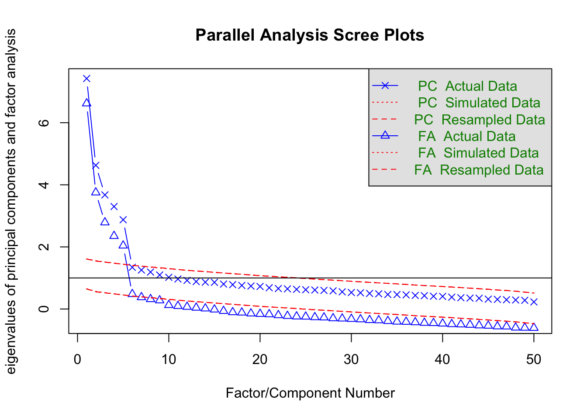
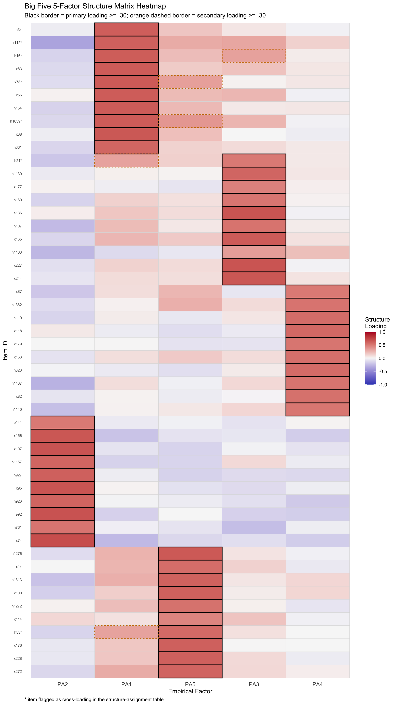
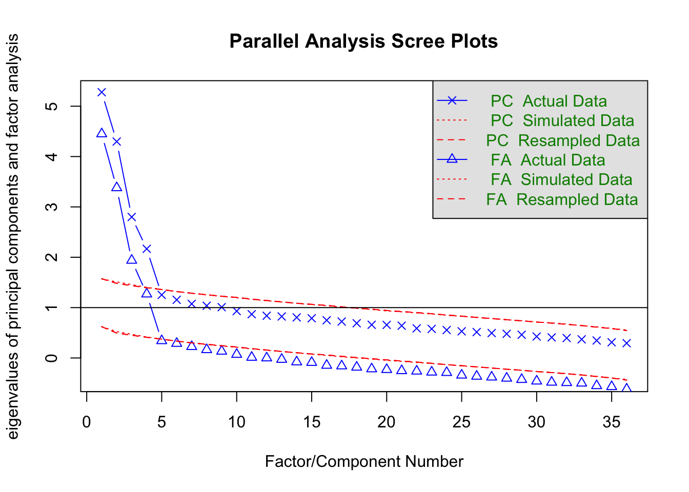
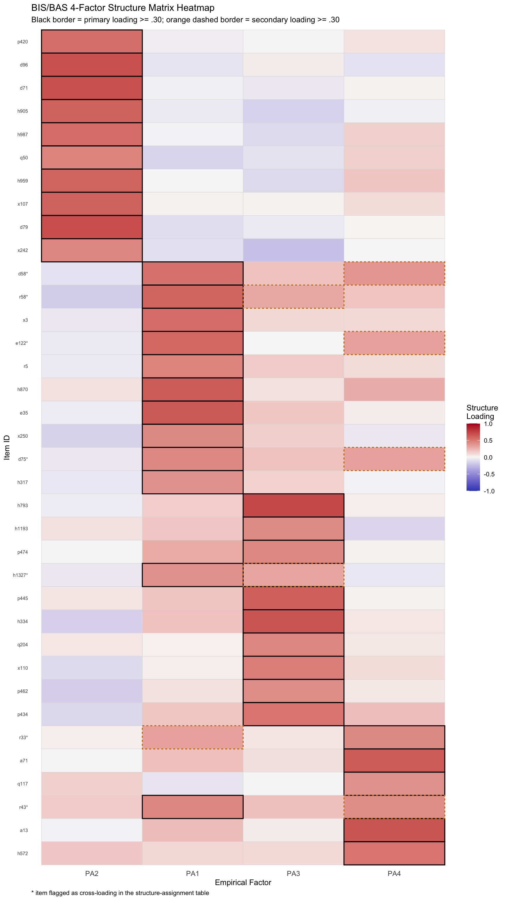
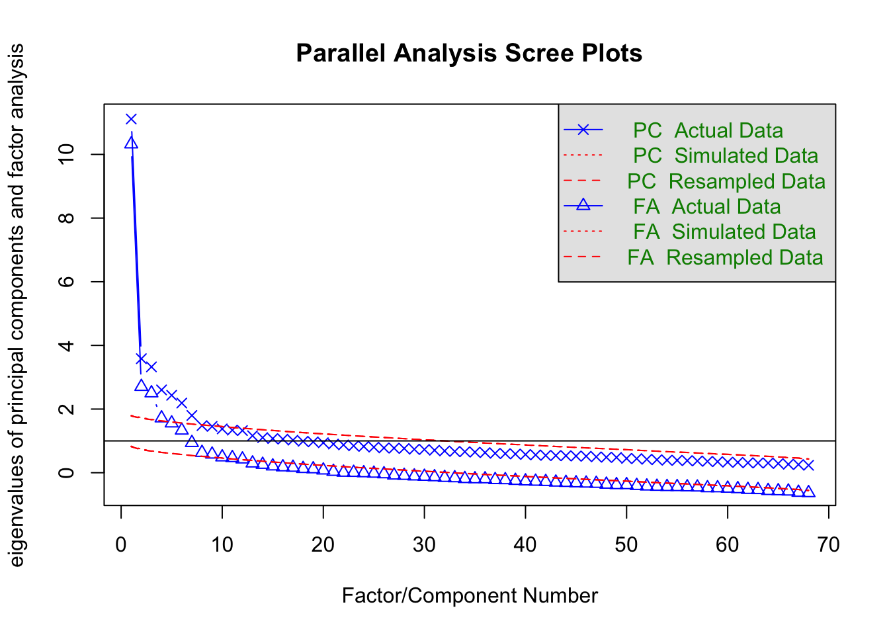
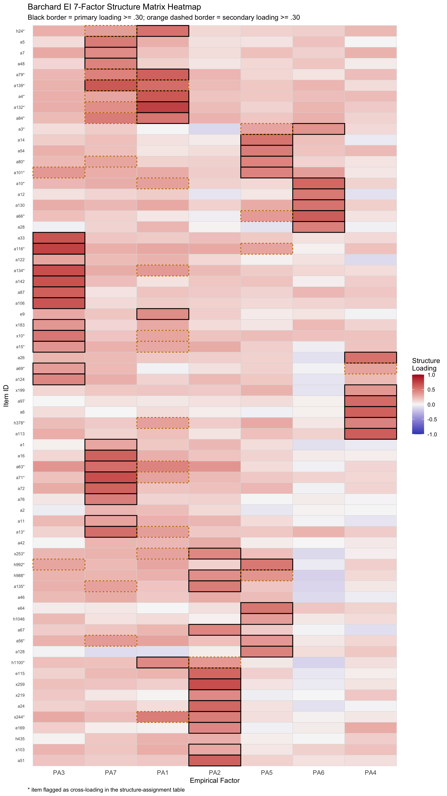
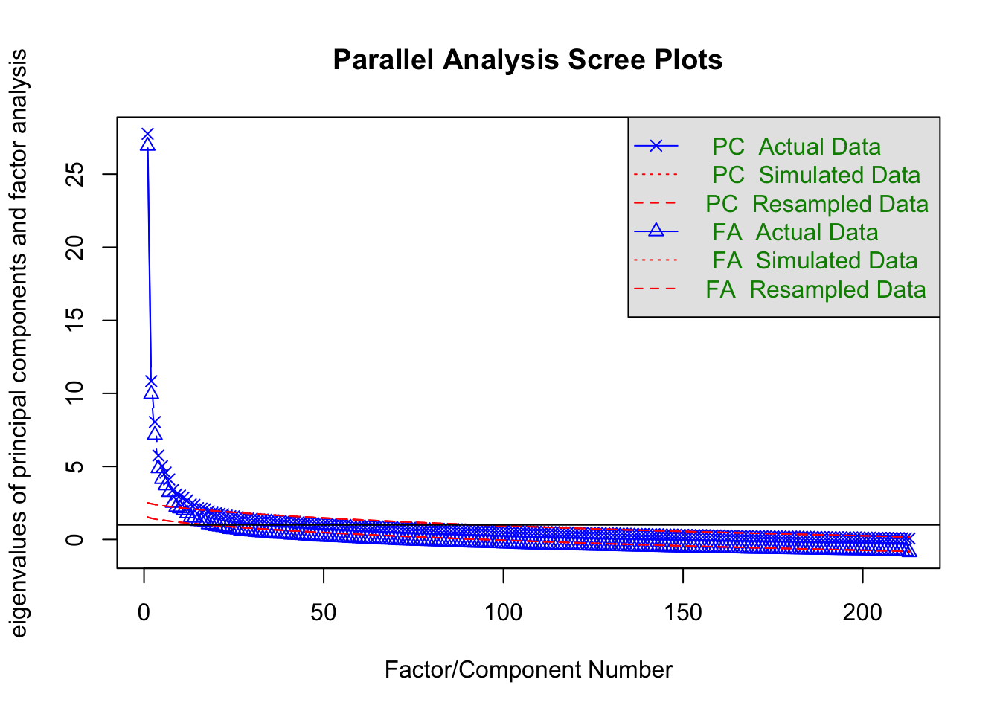
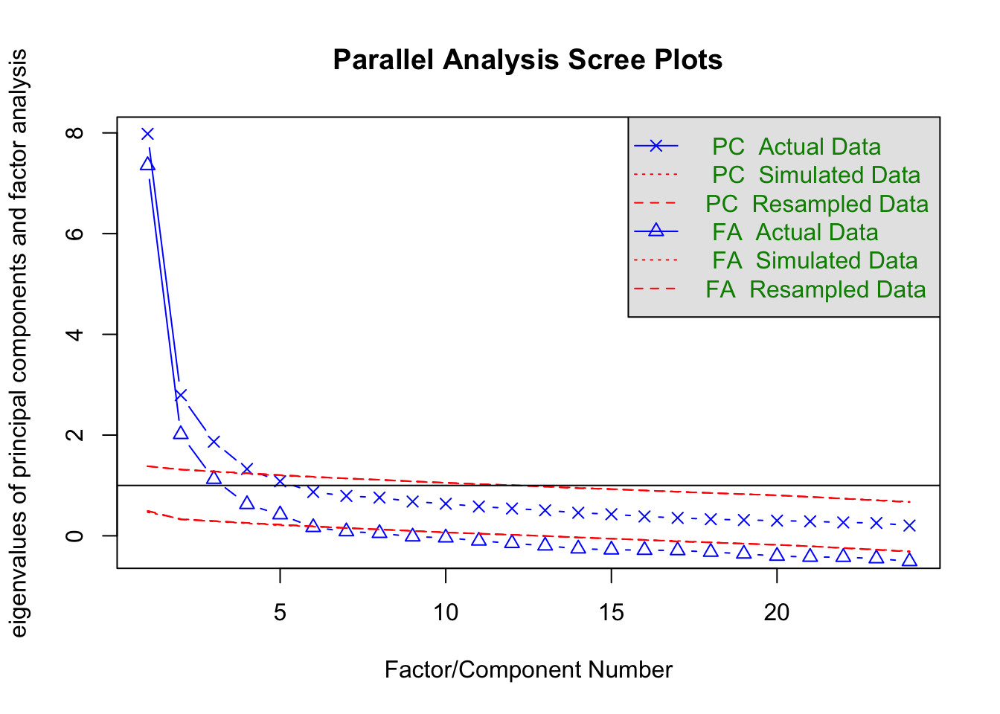
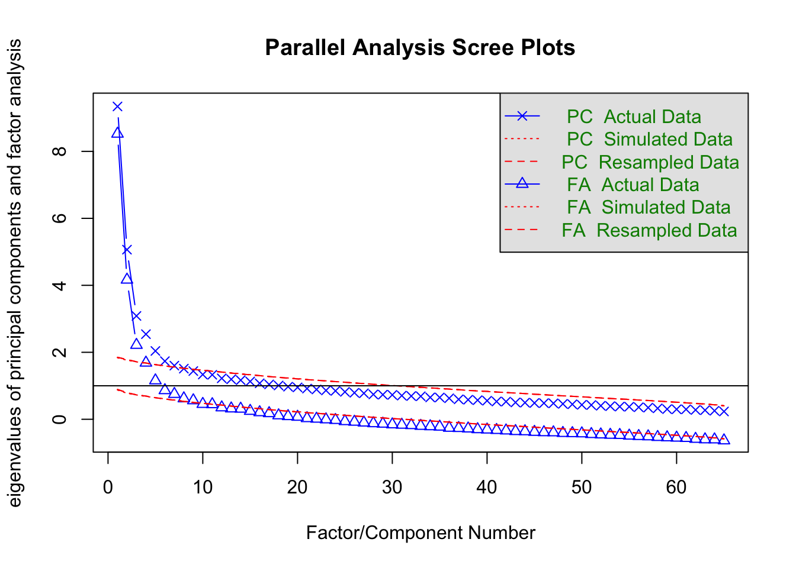
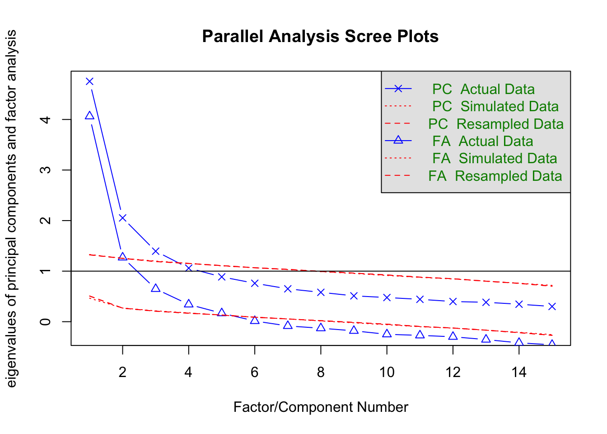

| score_level | score | score_id | n | items | mean | sd | median | min | max | theoretical_min | theoretical_max |
|---|---|---|---|---|---|---|---|---|---|---|---|
| scale | Extraversion | extraversion | 570 | 10 | 30.45 | 7.61 | 31 | 10 | 50 | 10 | 50 |
| scale | Agreeableness | agreeableness | 570 | 10 | 41.45 | 5.25 | 42 | 21 | 50 | 10 | 50 |
| scale | Conscientiousness | conscientiousness | 570 | 10 | 39.21 | 5.80 | 40 | 18 | 50 | 10 | 50 |
| scale | Neuroticism | neuroticism | 570 | 10 | 24.99 | 7.56 | 24 | 10 | 46 | 10 | 50 |
| scale | Openness to Experience | openness | 570 | 10 | 36.66 | 6.65 | 37 | 11 | 50 | 10 | 50 |
Psychometric Evaluation of Selected IPIP-Based Personality and Emotional Intelligence Measures
Abstract
There are many online tools claiming to assess personality and emotional intelligence, but it is important to evaluate the evidence behind their claims before users interpret their results. Using public domain items from the International Personality Item Pool, five measures concerning various theories of personality and emotional intelligence were evaluated using reliability and exploratory factor analysis. Responses from the Eugene-Springfield Community Sample were used to construct the sample needed for the analyses. The results show strong psychometric support for Big Five and BIS/BAS, moderate support for Barchard’s seven personality subcomponents of emotional intelligence, and limited support for VIA-IS and Trait EI. The findings support Big Five and BIS/BAS most strongly for user-facing interpretation, support Barchard for cautious interpretation, and suggest that VIA-IS and Trait EI should be treated as limited or exploratory.
Introduction
Personality psychology is the study of the variation of personality among people. It has many theoretical and practical applications, especially relating to psychometric analyses of how people, situations, and behaviors connect to each other, and using these analyses to drive the development of theory and social policy (Funder 2001).
Most personality inventories, especially those broadly addressing the personality spectrum, are proprietary, used for commercial purposes, and not available for general research (International Personality Item Pool n.d.). This makes it very challenging for researchers to study broad personality traits at a psychometric level. The International Personality Item Pool (IPIP), which is a public domain collection of 3,320 items from various personality inventories, was designed to address this problem (Goldberg et al. 2006).
This report evaluates five measures based on IPIP items using a common psychometric pipeline, including scoring, reliability analysis, inter-scale correlations, and exploratory factor analysis, in order to determine which instruments are most defensible for interpretation and public-facing use.
Method
Sample
The Eugene-Springfield Community Sample was a longitudinal study conducted by the Oregon Research Institute which involved recruited adult participants in the Eugene, Oregon area completing self-administered personality assessments based on the IPIP items between 1993 and 2007. The raw data are available on the Harvard Dataverse website and consists of 1,142 total cases, 1,134 cases with demographic information, and 960 cases who completed at least one survey (Goldberg and Saucier 2008; Goldberg 2018).
The sample for each measurement varied as each sample was composed of participants if and only if they completed every item on the measurement. The demographics for each measurement sample are very similar to the full Eugene-Springfield Community Sample. The full sample had a mean age of 49.7 (SD 13.1) with a range of 18-89. 53% of participants were female and 47% were male. 96% of participants were white. Participants had a high level of education with 52% having a college degree and 98% having at least a high school degree or vocational/technical training.
Age
| Statistic | Summary |
|---|---|
| Mean (SD) | 49.7 (13.1) |
| Range | 18-89 |
Gender
| Value | Summary | Percentage |
|---|---|---|
| Female | 603 | 53.2% |
| Male | 531 | 46.8% |
Ethnicity
| Value | Summary | Percentage |
|---|---|---|
| White | 1035 | 96.5% |
| Other | 38 | 3.5% |
Education
| Value | Summary | Percentage |
|---|---|---|
| Less than high school | 21 | 2.0% |
| High school or vocational training | 182 | 16.9% |
| Some college | 311 | 29.0% |
| College graduate | 210 | 19.6% |
| Some post-college education | 117 | 10.9% |
| Post-college degree | 233 | 21.7% |
Scoring
All items in the IPIP were scored on a Likert scale from 1-5, where 1 is “very inaccurate”, 2 is “moderately inaccurate”, 3 is “neither accurate nor inaccurate”, 4 is “moderately accurate”, and 5 is “very accurate”.
Items in each of the measures could be either positively or negatively related to its trait. For example, someone responding in the affirmative to “Am the life of the party” would be more likely described as an extravert, while someone responding in the affirmative to “Don’t like to draw attention to myself” would be less likely described as an extravert. Items negatively related to their trait were “negatively keyed” and were scored by applying the function 6 - n to its raw score (e.g., an answer of “4” would become “2”.)
Each item was assigned to exactly one lowest-level scoring unit (subscale, then scale). In hierarchical instruments, some items also contributed to a higher-order scale. For Trait EI, two isolated facets were scored as facets but excluded from factor-level analyses requiring a higher-order assignment.
The sum of all scales and (if applicable) subscales were then computed, which allowed the development of scoring tables with respect to the derived sample. Z-scores were transformed to T-scores (mean=50, stdev=10), a typical practice in personality assessments, along with percentile ranks, qualitative descriptors, and margins of error from later reliability measures. For all subscales, no T-scores were reported in lieu of summarized qualitative descriptors, and percentile ranks were based on the sample absolute rank instead of being based on sample mean and standard deviation. Scoring rows of \(|\sigma| > 3.0\) were clipped to that threshold.
Scoring tables are not included in this report and can be found on this project’s official website: https://darrenskidmore.com/projects/ipip-workbench.
Reliability Analysis
Reliability analysis, which verifies the consistency of a measure when subject to random error, is an essential aspect of psychometrics. Cronbach’s alpha (\(\alpha\)) and McDonald’s omega (\(\omega\)) were computed to determine the reliability of all scales and subscales. In all cases, these figures were nearly identical. Mean inter-item correlations were also computed.
Factor Analysis
Factor analysis is a process used to determine the number of latent (underlying) factors in a sample and which variables compose each of the factors. It is an essential aspect of personality psychology because its results can evaluate whether the observed structure is consistent with the claimed item-factor relationships.
Some preliminary steps used in factor analysis are Bartlett’s Test of Sphericity, which assesses whether the item correlation matrix differs from an identity matrix, and the Kaiser-Meyer-Olkin (KMO) Test, which evaluates sampling adequacy for factor analysis.
Parallel analysis uses two related methods, principal component analysis (PCA) and principal axis factoring (PAF), to examine at what point the observed eigenvalues decrease below the threshold expected by random data. Because PAF is the preferred method for factor analysis (Kim 2008), candidate solutions were examined using principal axis factoring. In some cases, the number of suggested factors and components differed across the two methods, in which case factor models corresponding to both candidate dimensionalities were investigated.
Two new metrics were used to aid in the process of theoretical-to-empirical component analysis:
- dominant-share purity: the proportion of items assigned to an empirical factor that came from its most common theoretical construct
- dominant-share alignment: the proportion of items from a theoretical construct that were recovered in its best-matching empirical factor
In some cases, the Phi matrix, which contains the correlations among the latent factors after oblique rotation, was used to determine if a global composite score was justified.
Measures
Five frameworks of personality and emotional intelligence were used in this study. Each test was subject to the same common pipeline, entirely composed of IPIP items, albeit with some specific nuances. All scales used the corresponding IPIP scoring key page for item selection unless otherwise indicated. Please see Appendix C for a list of these pages.
Big Five
The Big Five personality domains are a set of five factors that describe aspects of human personality. These heterogeneous factors, known as openness to experience, conscientiousness, extraversion, agreeableness, and neuroticism, are reported on a continuous scale. Combined, they account for the majority of the variance in human personality.
The Big Five implementation in this study was based on Goldberg’s Big Five factor markers (Goldberg 1992). 10 items for each factor were used for a total of 50.
Behavioral Inhibition/Activation Systems (BIS/BAS)
The BIS/BAS is a theory of personality denoted by separation of one’s interactions with the environment into the behavioral inhibition system (BIS), which is related to negative conditioning and sensitivity to avoidance, the behavioral activation system (BAS), which pertains to positive conditioning and sensitivity to reward, and the primarily autonomous fight-or-flight system (FFFS).
The BIS/BAS scale is based on a 1994 model of the BIS/BAS hypothesis (Carver and White 1994), focusing specifically on the BIS and BAS systems. It contains one scale for BIS (Anxiety) and three scales for BAS (Fun-Seeking, Drive, and Reward-Responsiveness) for a total of 36 items.
Barchard Emotional Intelligence
In her doctoral thesis, Kimberly Barchard of the University of British Columbia proposed a model of emotional intelligence including 14 constructs. Barchard identified half of these subcomponents as personality dimensions, meaning they could be measured by self-assessment rather than being cognitive abilities measured by performance (Barchard 2001).
The Barchard implementation in this study uses 7 constructs: Positive Expressivity, Negative Expressivity, Attending to Emotions, Emotion-Based Decision Making, Responsive Joy, Responsive Distress, and Empathic Concern, with a total of 68 items.
IPIP Values in Action (IPIP-VIA-IS)
The Values in Action Inventory of Strengths is an assessment focusing on measuring 24 character strengths among six broad virtues including wisdom, courage, humanity, justice, temperance, and transcendence. Although the current instrument is proprietary, a public-domain variant utilizing 240 (later reduced to 213) IPIP items and slightly different verbiage was constructed around 2004 (Peterson and Seligman 2004).
The official instrument has received some criticism due to factor analyses suggesting a different model. One such review found a different set of character strengths as well as only five broad virtues (McGrath 2014).
IPIP Trait Emotional Intelligence (IPIP-Trait EI)
Trait Emotional Intelligence or Trait EI is a theoretical model about emotional intelligence developed by K.V. Petrides. In Trait EI, an individual’s self-reported perceptions about their own emotional abilities is considered a measurable personality trait (Petrides and Furnham 2001). The model contains 15 traits organized under four facets: well-being, self-control, emotionality, sociability, with two traits being isolated.
Trait EI is used in TEIQue, a proprietary personality assessment which has been found by factor analysis to be consistent with the theoretical model (Mikolajczak et al. 2007). The implementation in this study does not use copyrighted content; each trait was manually assigned five items from the IPIP. To facilitate this process, the pool of items and traits were submitted to ChatGPT 5.4 Extended Thinking and Claude 4.6 Sonnet to reduce the total number of candidate items to 150, after which a manual subjective review yielded the final count of 75.
Results
The results show that all five measures vary in psychometric support. The following table summarizes the overall structural evidence and interpretative findings:
| Measure | Primary Constructs | Reliability | Factor Structure | Overall Interpretation |
|---|---|---|---|---|
| Big Five | 5 personality domains | Good | Good | Strong |
| BIS/BAS | 1 BIS + 3 BAS scales | Acceptable | Good | Strong |
| Barchard | 7 personality EI components | Acceptable | Borderline | Acceptable |
| IPIP-VIA-IS | 24 character strengths, 6 broad virtues | Good (Virtues), Acceptable (Strengths) | Very Weak | Limited |
| IPIP-Trait EI | 15 facets, 4 broad factors | Acceptable (Factors), Borderline (Facets) | Weak | Limited |
The qualitative descriptors used in the summary table are Good, Acceptable, Borderline, Weak, and Very Weak. For reliability, Good generally indicates average internal consistency above .80, Acceptable indicates average internal consistency from .70 to .79, Borderline indicates average internal consistency from .60 to .69, and Weak indicates average internal consistency below .60. For factor structure, Good indicates clear recovery of the intended structure, Acceptable indicates near-complete recovery with minor ambiguity, Borderline indicates partial recovery with meaningful ambiguity, and Weak indicates limited recovery of the intended structure. Very Weak is reserved for cases where the empirical structure is limited and the broader literature also raises concerns about the proposed structure. The Overall Interpretation label, reported separately as Strong, Acceptable, or Limited, indicates the degree to which user-facing interpretation is recommended.
Big Five
Sample and Descriptive Statistics
The Big Five sample consisted of 570 participants who completed all items related to the IPIP Big Five instrument. Demographics of this subset were similar to the full sample.
The highest scoring scale was Agreeableness with an average score of 41.45, and the lowest scoring scale was Neuroticism with an average score of 24.99. The theoretical maximum was attained in 4/5 dimensions, but the theoretical minimum was only attained in 2/5 dimensions, suggesting that extremely low scores are much rarer than extremely high scores.
Inter-Scale Correlations
Most scales had zero-to-low correlations to each other (range -0.18-0.37), suggesting that the five domains were meaningfully distinct.
| score_level | score | score_id | extraversion | agreeableness | conscientiousness | neuroticism | openness |
|---|---|---|---|---|---|---|---|
| scale | Extraversion | extraversion | 1.00 | 0.25 | 0.05 | -0.17 | 0.37 |
| scale | Agreeableness | agreeableness | 0.25 | 1.00 | 0.07 | -0.18 | 0.12 |
| scale | Conscientiousness | conscientiousness | 0.05 | 0.07 | 1.00 | -0.16 | 0.02 |
| scale | Neuroticism | neuroticism | -0.17 | -0.18 | -0.16 | 1.00 | -0.12 |
| scale | Openness to Experience | openness | 0.37 | 0.12 | 0.02 | -0.12 | 1.00 |
Reliability
The reliability measures Cronbach’s alpha (\(\alpha\)) and McDonald’s omega (\(\omega\)) for each scale were nearly identical and ranged from 0.79 (Conscientiousness) to 0.87 (Extraversion), suggesting good internal consistency. Mean inter-item correlation ranged from 0.29 (Conscientiousness) to 0.40 (Extraversion).
| score_level | score | score_id | n | items | alpha | omega_total | mean_interitem_r |
|---|---|---|---|---|---|---|---|
| scale | Extraversion | extraversion | 570 | 10 | 0.87 | 0.87 | 0.40 |
| scale | Agreeableness | agreeableness | 570 | 10 | 0.82 | 0.82 | 0.31 |
| scale | Conscientiousness | conscientiousness | 570 | 10 | 0.79 | 0.80 | 0.29 |
| scale | Neuroticism | neuroticism | 570 | 10 | 0.86 | 0.86 | 0.38 |
| scale | Openness to Experience | openness | 570 | 10 | 0.83 | 0.84 | 0.34 |
Factor Analysis
Bartlett’s Test of Sphericity
Verified with a confidence test (p<0.05) that the data are not an identity matrix and therefore suitable for factor analysis.
cortest.bartlett(big5_scored_fa)R was not square, finding R from data$chisq
[1] 10114.54
$p.value
[1] 0
$df
[1] 1225Kaiser-Meyer-Olkin Test
Verified that the data are suitable for factor analysis with an overall MSA of 0.87 (excellent).
KMO(big5_scored_fa)Kaiser-Meyer-Olkin factor adequacy
Call: KMO(r = big5_scored_fa)
Overall MSA = 0.87
MSA for each item =
h34 x112 h16 x83 x78 x56 h154 h1039 x68 h661 h21 h1130 x177
0.88 0.91 0.94 0.88 0.88 0.90 0.93 0.92 0.87 0.90 0.91 0.80 0.83
h160 e136 h107 x165 h1103 x227 x244 x87 h1362 e119 x118 x179 x163
0.86 0.85 0.85 0.90 0.84 0.83 0.83 0.88 0.80 0.83 0.83 0.84 0.80
h823 h1467 x82 h1140 e141 x156 x107 h1157 h927 x95 h926 e92 h761
0.79 0.88 0.80 0.86 0.86 0.84 0.87 0.90 0.91 0.90 0.90 0.92 0.87
x74 h1276 x14 h1313 x100 h1272 x114 h53 x176 x228 x272
0.85 0.84 0.81 0.89 0.89 0.80 0.85 0.87 0.79 0.82 0.84 Parallel Analysis
set.seed(0)
fa.parallel(big5_scored_fa)
Parallel analysis suggests that the number of factors = 6 and the number of components = 5 The parallel analysis suggested the number of factors is 6 while the number of components is 5. Both models were compared and the five-factor model aligned much more consistently with the theoretical expectations than the six-factor model. The six-factor model had the exact same factor alignment as the five-factor model, with the sixth factor having no items assigned to it.
Principal Axis Factoring
Under principal axis factoring, all items had at least one loading ≥ 0.30 and six items (12%) were cross-loaded, meaning they had a loading ≥ 0.30 on two or more components. However, with the five-factor model, every item’s dominant scale matched the original, theoretical component.

| factor | dominant_scale_id | dominant_item_count | total_items_assigned | dominant_share_purity | dominant_share_alignment | extraversion | agreeableness | conscientiousness | neuroticism | openness |
|---|---|---|---|---|---|---|---|---|---|---|
| PA1 | extraversion | 10 | 10 | 1 | 1 | 10 | 0 | 0 | 0 | 0 |
| PA2 | neuroticism | 10 | 10 | 1 | 1 | 0 | 0 | 0 | 10 | 0 |
| PA3 | agreeableness | 10 | 10 | 1 | 1 | 0 | 10 | 0 | 0 | 0 |
| PA4 | conscientiousness | 10 | 10 | 1 | 1 | 0 | 0 | 10 | 0 | 0 |
| PA5 | openness | 10 | 10 | 1 | 1 | 0 | 0 | 0 | 0 | 10 |
The factor intercorrelations in the Phi matrix were low, which is consistent with the Big Five being related personality domains rather than indicators of a single common factor. Accordingly, the results do not support a global composite score.
| factor | PA2 | PA1 | PA5 | PA3 | PA4 |
|---|---|---|---|---|---|
| PA2 | 1.00 | -0.15 | -0.13 | -0.12 | -0.17 |
| PA1 | -0.15 | 1.00 | 0.32 | 0.18 | 0.03 |
| PA5 | -0.13 | 0.32 | 1.00 | 0.10 | 0.02 |
| PA3 | -0.12 | 0.18 | 0.10 | 1.00 | 0.05 |
| PA4 | -0.17 | 0.03 | 0.02 | 0.05 | 1.00 |
Interpretation
The Big Five personality domains showed strong internal-structure evidence in this sample. Domain reliability and the factor structure showed strong item consistency and full factor alignment with the theoretical structure.
A comparison to public results from an identical test hosted by OpenPsychometrics (n=1,015,342) showed very small differences in Extraversion (d=0.16), small differences in openness (d=-0.43), medium differences in agreeableness (d=0.60) and neuroticism (d=-0.72), and large differences in conscientiousness (d=0.87) (Open-Source Psychometrics Project 2019). It is likely that the domain means differences are related to different sample types (online, demographically diverse vs. in-person, demographically homogeneous.)
| Scale | Mean (This Study) | SD (This Study) | Mean (OpenPsych) | SD (OpenPsych) | t | df | p | d |
|---|---|---|---|---|---|---|---|---|
| Extraversion | 30.45 | 7.61 | 29.14 | 9.11 | 4.11 | 569.92 | <0.001 | 0.16 |
| Agreeableness | 41.45 | 5.25 | 37.59 | 7.36 | 17.55 | 570.26 | <0.001 | 0.60 |
| Conscientiousness | 39.21 | 5.80 | 33.43 | 7.39 | 23.80 | 570.04 | <0.001 | 0.87 |
| Neuroticism | 24.99 | 7.56 | 30.81 | 8.61 | -18.38 | 569.83 | <0.001 | -0.72 |
| Openness | 36.66 | 6.65 | 39.39 | 6.18 | -9.79 | 569.55 | <0.001 | -0.43 |
Behavioral Inhibition/Activation Systems (BIS/BAS)
Sample and Descriptive Statistics
The BIS/BAS sample consisted of 461 participants who completed all items related to the IPIP BIS/BAS instrument. Demographics of this subset were similar to the full sample.
| score_level | score | score_id | n | items | mean | sd | median | min | max | theoretical_min | theoretical_max |
|---|---|---|---|---|---|---|---|---|---|---|---|
| scale | BIS (Anxiety) | anxiety | 461 | 10 | 27.05 | 7.56 | 26 | 11 | 50 | 10 | 50 |
| scale | BAS (Fun-Seeking) | fun_seeking | 461 | 10 | 26.25 | 6.83 | 26 | 12 | 45 | 10 | 50 |
| scale | BAS (Drive) | drive | 461 | 10 | 28.41 | 6.25 | 28 | 12 | 45 | 10 | 50 |
| scale | BAS (Reward-Responsiveness) | reward_response | 461 | 6 | 20.25 | 3.82 | 20 | 8 | 30 | 6 | 30 |
Inter-Scale Correlations
Most scales had low positive correlations to each other (range -0.12-0.36), suggesting that the four scales were related but still meaningfully distinct.
| score_level | score | score_id | anxiety | fun_seeking | drive | reward_response |
|---|---|---|---|---|---|---|
| scale | BIS (Anxiety) | anxiety | 1.00 | -0.12 | -0.12 | 0.14 |
| scale | BAS (Fun-Seeking) | fun_seeking | -0.12 | 1.00 | 0.30 | 0.36 |
| scale | BAS (Drive) | drive | -0.12 | 0.30 | 1.00 | 0.14 |
| scale | BAS (Reward-Responsiveness) | reward_response | 0.14 | 0.36 | 0.14 | 1.00 |
Reliability
The reliability measures Cronbach’s alpha (\(\alpha\)) and McDonald’s omega (\(\omega\)) for each scale ranged from 0.69 (Reward-Responsiveness) to 0.84 (Anxiety), suggesting acceptable to good internal consistency. Mean inter-item correlation ranged from 0.26 (Drive) to 0.34 (Anxiety).
| score_level | score | score_id | n | items | alpha | omega_total | mean_interitem_r |
|---|---|---|---|---|---|---|---|
| scale | BIS (Anxiety) | anxiety | 461 | 10 | 0.84 | 0.84 | 0.34 |
| scale | BAS (Fun-Seeking) | fun_seeking | 461 | 10 | 0.79 | 0.80 | 0.28 |
| scale | BAS (Drive) | drive | 461 | 10 | 0.77 | 0.78 | 0.26 |
| scale | BAS (Reward-Responsiveness) | reward_response | 461 | 6 | 0.69 | 0.70 | 0.27 |
Factor Analysis
Bartlett’s Test of Sphericity
Verified with a confidence test (p<0.05) that the data are not an identity matrix and therefore suitable for factor analysis.
cortest.bartlett(bis_bas_scored_fa)R was not square, finding R from data$chisq
[1] 4556.522
$p.value
[1] 0
$df
[1] 630Kaiser-Meyer-Olkin Test
Verified that the data are suitable for factor analysis with an overall MSA of 0.84 (excellent).
KMO(bis_bas_scored_fa)Kaiser-Meyer-Olkin factor adequacy
Call: KMO(r = bis_bas_scored_fa)
Overall MSA = 0.84
MSA for each item =
p420 d96 d71 h905 h987 q50 h959 x107 d79 x242 d58 r58 x3
0.87 0.83 0.87 0.88 0.88 0.89 0.86 0.85 0.82 0.87 0.86 0.91 0.85
e122 r5 h870 e35 x250 d75 h317 h793 h1193 p474 h1327 p445 h334
0.83 0.87 0.87 0.86 0.85 0.85 0.84 0.79 0.76 0.85 0.85 0.87 0.82
q204 x110 p462 p434 r33 a71 q117 r43 a13 h572
0.69 0.75 0.85 0.82 0.82 0.82 0.78 0.88 0.79 0.80 Parallel Analysis
set.seed(0)
fa.parallel(bis_bas_scored_fa)
Parallel analysis suggests that the number of factors = 4 and the number of components = 4 The parallel analysis suggested the number of factors and number of components is 4, which is in harmony with the theoretical model.
Principal Axis Factoring
Under principal axis factoring, all items had at least one loading ≥ 0.30 and seven items (19%) were cross-loaded, meaning they had a loading ≥ 0.30 on two or more components. All but two items matched their theoretical component, but the two that did not match cross-loaded on their original theoretical factor with loading gaps of 0.0757 and 0.0285. For this reason, it can be justified to keep these items in their original categories.

| factor | dominant_scale_id | dominant_item_count | total_items_assigned | dominant_share_purity | dominant_share_alignment | anxiety | fun_seeking | drive | reward_response |
|---|---|---|---|---|---|---|---|---|---|
| PA1 | fun_seeking | 10 | 12 | 0.83 | 1.00 | 0 | 10 | 1 | 1 |
| PA2 | anxiety | 10 | 10 | 1.00 | 1.00 | 10 | 0 | 0 | 0 |
| PA3 | drive | 9 | 9 | 1.00 | 0.90 | 0 | 0 | 9 | 0 |
| PA4 | reward_response | 5 | 5 | 1.00 | 0.83 | 0 | 0 | 0 | 5 |
The factor intercorrelations in the Phi matrix were low, meaning the results support interpreting the BAS subscales separately rather than aggregating them into a global composite score or a composite BAS score.
| factor | PA2 | PA1 | PA3 | PA4 |
|---|---|---|---|---|
| PA2 | 1.00 | -0.07 | -0.08 | 0.05 |
| PA1 | -0.07 | 1.00 | 0.23 | 0.24 |
| PA3 | -0.08 | 0.23 | 1.00 | 0.05 |
| PA4 | 0.05 | 0.24 | 0.05 | 1.00 |
Interpretation
The BIS/BAS scales showed strong internal-structure evidence in this sample. Domain reliability and the factor structure showed adequate to strong item consistency and nearly full factor alignment with the theoretical structure. The two items which did not align did have sufficient loadings to their original factors to justify their inclusion.
Barchard Emotional Intelligence
Sample and Descriptive Statistics
The Barchard Emotional Intelligence sample consisted of 524 participants who completed all items related to the IPIP Barchard Emotional Intelligence instrument. Demographics of this subset were similar to the full sample.
The highest scoring scale was Responsive Joy with an average score of 39.39 (average item score of 3.94), and the lowest scoring scale was Emotion-Based Decision-Making with an average score of 25.12 (average item score of 2.79.) The theoretical maximum was observed in 3/7 scales and the theoretical minimum was never observed.
| score_level | score | score_id | n | items | mean | sd | median | min | max | theoretical_min | theoretical_max |
|---|---|---|---|---|---|---|---|---|---|---|---|
| scale | Positive Expressivity | positive_expressivity | 524 | 9 | 35.22 | 5.99 | 36 | 16 | 45 | 9 | 45 |
| scale | Negative Expressivity | negative_expressivity | 524 | 10 | 31.28 | 6.40 | 31 | 15 | 50 | 10 | 50 |
| scale | Attending to Emotions | attending_to_emotions | 524 | 10 | 36.48 | 6.55 | 36 | 16 | 50 | 10 | 50 |
| scale | Emotion-Based Decision-Making | emotion_based_decision_making | 524 | 9 | 25.12 | 4.77 | 25 | 11 | 42 | 9 | 45 |
| scale | Responsive Joy | responsive_joy | 524 | 10 | 39.39 | 5.13 | 40 | 21 | 50 | 10 | 50 |
| scale | Responsive Distress | responsive_distress | 524 | 10 | 32.41 | 5.51 | 32 | 16 | 47 | 10 | 50 |
| scale | Empathic Concern | empathic_concern | 524 | 10 | 35.83 | 5.72 | 36 | 16 | 49 | 10 | 50 |
Inter-Scale Correlations
The seven components had low-to-moderate positive correlations to each other (range 0.13-0.58; mean 0.36). This suggests that the components are meaningfully related to each other, especially the strongest intercorrelation pair of Responsive Joy and Positive Expressivity.
| score_level | score | score_id | positive_expressivity | negative_expressivity | attending_to_emotions | emotion_based_decision_making | responsive_joy | responsive_distress | empathic_concern |
|---|---|---|---|---|---|---|---|---|---|
| scale | Positive Expressivity | positive_expressivity | 1.00 | 0.44 | 0.43 | 0.38 | 0.58 | 0.40 | 0.35 |
| scale | Negative Expressivity | negative_expressivity | 0.44 | 1.00 | 0.36 | 0.21 | 0.29 | 0.34 | 0.13 |
| scale | Attending to Emotions | attending_to_emotions | 0.43 | 0.36 | 1.00 | 0.39 | 0.28 | 0.40 | 0.33 |
| scale | Emotion-Based Decision-Making | emotion_based_decision_making | 0.38 | 0.21 | 0.39 | 1.00 | 0.28 | 0.35 | 0.32 |
| scale | Responsive Joy | responsive_joy | 0.58 | 0.29 | 0.28 | 0.28 | 1.00 | 0.40 | 0.37 |
| scale | Responsive Distress | responsive_distress | 0.40 | 0.34 | 0.40 | 0.35 | 0.40 | 1.00 | 0.43 |
| scale | Empathic Concern | empathic_concern | 0.35 | 0.13 | 0.33 | 0.32 | 0.37 | 0.43 | 1.00 |
Reliability
The reliability measures Cronbach’s alpha (\(\alpha\)) and McDonald’s omega (\(\omega\)) for each scale ranged from 0.68 (Responsive Distress) to 0.83 (Attending to Emotions), suggesting acceptable internal consistency. Mean inter-item correlation ranged from 0.17 (Responsive Distress) to 0.33 (Positive Expressivity).
| score_level | score | score_id | n | items | alpha | omega_total | mean_interitem_r |
|---|---|---|---|---|---|---|---|
| scale | Positive Expressivity | positive_expressivity | 524 | 9 | 0.81 | 0.82 | 0.33 |
| scale | Negative Expressivity | negative_expressivity | 524 | 10 | 0.75 | 0.76 | 0.24 |
| scale | Attending to Emotions | attending_to_emotions | 524 | 10 | 0.83 | 0.83 | 0.32 |
| scale | Emotion-Based Decision-Making | emotion_based_decision_making | 524 | 9 | 0.73 | 0.73 | 0.23 |
| scale | Responsive Joy | responsive_joy | 524 | 10 | 0.74 | 0.76 | 0.24 |
| scale | Responsive Distress | responsive_distress | 524 | 10 | 0.68 | 0.68 | 0.17 |
| scale | Empathic Concern | empathic_concern | 524 | 10 | 0.75 | 0.76 | 0.23 |
Factor Analysis
Bartlett’s Test of Sphericity
Verified with a confidence test (p<0.05) that the data are not an identity matrix and therefore suitable for factor analysis.
cortest.bartlett(barchard_scored_fa)R was not square, finding R from data$chisq
[1] 11500.35
$p.value
[1] 0
$df
[1] 2278Kaiser-Meyer-Olkin Test
Verified that the data are suitable for factor analysis with an overall MSA of 0.88 (excellent).
KMO(barchard_scored_fa)Kaiser-Meyer-Olkin factor adequacy
Call: KMO(r = barchard_scored_fa)
Overall MSA = 0.88
MSA for each item =
h24 a5 a7 a48 a79 a139 a4 a132 a84 a3 a14 a54 a80
0.90 0.80 0.91 0.81 0.94 0.93 0.91 0.91 0.94 0.79 0.81 0.89 0.87
a101 a10 a12 a130 a66 a28 a33 a116 a122 a134 a142 a87 a106
0.91 0.88 0.71 0.88 0.80 0.74 0.89 0.92 0.85 0.93 0.89 0.89 0.90
e9 x183 x10 a15 a26 a69 a124 x199 a97 a6 h378 a113 a1
0.92 0.82 0.92 0.88 0.87 0.83 0.88 0.79 0.72 0.74 0.88 0.87 0.75
a16 a63 a71 a72 a76 a2 a11 a13 a42 x253 h992 h988 a135
0.91 0.94 0.91 0.91 0.84 0.74 0.85 0.89 0.78 0.90 0.88 0.91 0.87
a46 e64 h1046 a67 a56 a128 h1100 e115 x259 x219 a24 x244 e169
0.88 0.70 0.84 0.91 0.88 0.64 0.88 0.89 0.89 0.76 0.87 0.93 0.77
h435 x103 a51
0.82 0.89 0.87 Parallel Analysis
set.seed(0)
fa.parallel(barchard_scored_fa)
Parallel analysis suggests that the number of factors = 11 and the number of components = 7 Though parallel analysis suggests that the true number of factors in the model is greater than 7 (the actual reported number varies between 9 to 13 even with seed set), the factor eigenvalues experience a much lower derivative beyond 8 factors despite still being slightly above the threshold value. Therefore, the existence of at least 7 factors is clearly supported, with factors 8 through 11 being borderline.
Principal Axis Factoring
Under principal axis factoring, 64 items (94%) had at least one loading ≥ 0.30 and 27 items (40%) were cross-loaded, meaning they had a loading ≥ 0.30 on two or more components. The observed factors only partially reproduced the intended component structure, with 49 items (72%) having their highest loading match their respective theoretical assignment. None of the new factors were exactly the same as their theoretical components; although three of the factors (Attending to Emotions, Emotion-Based Decision-Making, and Empathic Concern) were quite strong, retaining all but one of their original items each, the other components experienced significant item cross-loading and scale-blending.

| factor | dominant_scale_id | dominant_item_count | total_items_assigned | dominant_share_purity | dominant_share_alignment | positive_expressivity | negative_expressivity | attending_to_emotions | emotion_based_decision_making | responsive_joy | responsive_distress | empathic_concern |
|---|---|---|---|---|---|---|---|---|---|---|---|---|
| PA1 | positive_expressivity | 5 | 7 | 0.71 | 0.56 | 5 | 0 | 1 | 0 | 0 | 0 | 1 |
| PA2 | empathic_concern | 9 | 15 | 0.60 | 0.90 | 0 | 0 | 0 | 0 | 1 | 5 | 9 |
| PA3 | attending_to_emotions | 9 | 12 | 0.75 | 0.90 | 0 | 0 | 9 | 3 | 0 | 0 | 0 |
| PA4 | emotion_based_decision_making | 6 | 6 | 1.00 | 0.67 | 0 | 0 | 0 | 6 | 0 | 0 | 0 |
| PA5 | responsive_distress | 5 | 9 | 0.56 | 0.50 | 0 | 4 | 0 | 0 | 0 | 5 | 0 |
| PA6 | negative_expressivity | 6 | 6 | 1.00 | 0.60 | 0 | 6 | 0 | 0 | 0 | 0 | 0 |
| PA7 | responsive_joy | 9 | 13 | 0.69 | 0.90 | 4 | 0 | 0 | 0 | 9 | 0 | 0 |
The factor intercorrelations in the Phi matrix were low, meaning there is no empirical support for a global Barchard Emotional Intelligence composite score.
| factor | PA3 | PA7 | PA1 | PA2 | PA5 | PA6 | PA4 |
|---|---|---|---|---|---|---|---|
| PA3 | 1.00 | 0.27 | 0.28 | 0.27 | 0.25 | 0.11 | 0.20 |
| PA7 | 0.27 | 1.00 | 0.40 | 0.26 | 0.21 | 0.12 | 0.10 |
| PA1 | 0.28 | 0.40 | 1.00 | 0.27 | 0.11 | 0.16 | 0.13 |
| PA2 | 0.27 | 0.26 | 0.27 | 1.00 | 0.13 | -0.07 | 0.10 |
| PA5 | 0.25 | 0.21 | 0.11 | 0.13 | 1.00 | 0.13 | 0.15 |
| PA6 | 0.11 | 0.12 | 0.16 | -0.07 | 0.13 | 1.00 | 0.06 |
| PA4 | 0.20 | 0.10 | 0.13 | 0.10 | 0.15 | 0.06 | 1.00 |
Interpretation
The Barchard implementation in this study has a partially recovered, borderline factor structure. The existence of seven factors was supported by the factor analysis, but the items did not perfectly align with their theoretical construct. Interpretation should remain cautious. The empirical factors were interpreted and in some cases slightly modified according to the content of their highest-loading items.
| Factor ID | Original Name(s) | New Name |
|---|---|---|
| PA1 | Positive Expressivity | Expressive Affection |
| PA2 | Responsive Distress, Empathic Concern | Empathic Concern |
| PA3 | Attending to Emotions, Emotion-Based Decision-Making | Emotional Self-Awareness |
| PA4 | Emotion-Based Decision-Making | Emotion-Based Decision-Making |
| PA5 | Negative Expressivity, Responsive Distress | Distress Expressivity |
| PA6 | Negative Expressivity | Negative Expressivity |
| PA7 | Positive Expressivity, Responsive Joy | Responsive Joy |
IPIP Values in Action (IPIP-VIA-IS)
Sample and Descriptive Statistics
The IPIP Values in Action sample consisted of 591 participants who completed all items related to the IPIP Values in Action instrument. Demographics of this subset were similar to the full sample. The VIA model in this study was represented as six virtues (scales) and 24 character strengths (subscales).
| score_level | score | score_id | n | items | mean | sd | median | min | max | theoretical_min | theoretical_max |
|---|---|---|---|---|---|---|---|---|---|---|---|
| scale | Transcendence | transcendence | 591 | 42 | 161.29 | 19.53 | 162 | 97 | 207 | 42 | 210 |
| scale | Humanity | humanity | 591 | 26 | 101.83 | 11.04 | 102 | 70 | 126 | 26 | 130 |
| scale | Justice | justice | 591 | 25 | 96.29 | 10.56 | 97 | 58 | 122 | 25 | 125 |
| scale | Wisdom | wisdom | 591 | 46 | 178.41 | 20.57 | 179 | 104 | 225 | 46 | 230 |
| scale | Temperance | temperance | 591 | 38 | 139.42 | 14.42 | 140 | 93 | 175 | 38 | 190 |
| scale | Courage | courage | 591 | 36 | 139.70 | 14.64 | 140 | 84 | 173 | 36 | 180 |
| subscale | Appreciation of Beauty | App | 591 | 8 | 28.15 | 5.65 | 28 | 10 | 40 | 8 | 40 |
| subscale | Capacity for Love | Cap | 591 | 9 | 35.57 | 4.89 | 36 | 16 | 45 | 9 | 45 |
| subscale | Citizenship/Teamwork | Cit | 591 | 9 | 33.55 | 5.15 | 34 | 19 | 45 | 9 | 45 |
| subscale | Curiosity | Cur | 591 | 10 | 40.31 | 5.54 | 41 | 19 | 50 | 10 | 50 |
| subscale | Equity/Fairness | Equ | 591 | 9 | 36.73 | 3.93 | 37 | 21 | 45 | 9 | 45 |
| subscale | Forgiveness/Mercy | For | 591 | 9 | 33.80 | 5.44 | 34 | 12 | 45 | 9 | 45 |
| subscale | Gratitude | Gra | 591 | 8 | 34.41 | 4.17 | 35 | 16 | 40 | 8 | 40 |
| subscale | Hope/Optimism | Hop | 591 | 8 | 31.08 | 4.41 | 31 | 10 | 40 | 8 | 40 |
| subscale | Humor/Playfulness | Hum | 591 | 9 | 35.18 | 5.36 | 36 | 16 | 45 | 9 | 45 |
| subscale | Industry/Perseverance/Persistence | Ind | 591 | 8 | 31.47 | 4.88 | 32 | 10 | 40 | 8 | 40 |
| subscale | Integrity/Honesty/Authenticity | Int | 591 | 9 | 39.55 | 3.52 | 40 | 22 | 45 | 9 | 45 |
| subscale | Judgment/Open-Mindedness | Jud | 591 | 9 | 35.76 | 4.64 | 36 | 12 | 45 | 9 | 45 |
| subscale | Kindness/Generosity | Kin | 591 | 10 | 40.47 | 4.93 | 41 | 24 | 50 | 10 | 50 |
| subscale | Leadership | Lea | 591 | 7 | 26.01 | 4.56 | 26 | 10 | 35 | 7 | 35 |
| subscale | Love of Learning | Lov | 591 | 10 | 38.58 | 6.14 | 39 | 20 | 50 | 10 | 50 |
| subscale | Modesty/Humility | Mod | 591 | 9 | 32.06 | 5.32 | 32 | 17 | 44 | 9 | 45 |
| subscale | Originality/Creativity | Ori | 591 | 8 | 29.08 | 5.74 | 30 | 12 | 40 | 8 | 40 |
| subscale | Perspective/Wisdom | Per | 591 | 9 | 34.68 | 4.68 | 35 | 20 | 45 | 9 | 45 |
| subscale | Prudence | Pru | 591 | 9 | 35.38 | 4.72 | 36 | 19 | 45 | 9 | 45 |
| subscale | Self-Regulation/Self-Control | Sel | 591 | 11 | 38.18 | 6.91 | 39 | 14 | 55 | 11 | 55 |
| subscale | Social/Personal/Emotional Intelligence | Soc | 591 | 7 | 25.78 | 3.89 | 26 | 10 | 35 | 7 | 35 |
| subscale | Spirituality/Religiousness | Spi | 591 | 9 | 32.47 | 9.32 | 34 | 9 | 45 | 9 | 45 |
| subscale | Valor/Bravery/Courage | Val | 591 | 10 | 34.81 | 5.57 | 35 | 15 | 49 | 10 | 50 |
| subscale | Zest/Enthusiasm/Vitality | Zes | 591 | 9 | 33.88 | 5.67 | 35 | 12 | 45 | 9 | 45 |
Inter-Scale Correlations
The six broad scales had generally moderately positive correlations to each other (range 0.16-0.71; mean 0.48), suggesting that the scales are meaningfully related to each other. Correlations between scales and subscales were also moderately positive (range -0.18-0.85; mean 0.42) and correlations between subscales were low positive (range -0.27-0.67; mean 0.28). For brevity the full correlation matrix including the 24 subscales can be found in Appendix A.
| score | transcendence | humanity | justice | wisdom | temperance | courage |
|---|---|---|---|---|---|---|
| Transcendence | 1.00 | 0.66 | 0.53 | 0.46 | 0.34 | 0.51 |
| Humanity | 0.66 | 1.00 | 0.71 | 0.54 | 0.33 | 0.57 |
| Justice | 0.53 | 0.71 | 1.00 | 0.44 | 0.39 | 0.53 |
| Wisdom | 0.46 | 0.54 | 0.44 | 1.00 | 0.16 | 0.67 |
| Temperance | 0.34 | 0.33 | 0.39 | 0.16 | 1.00 | 0.41 |
| Courage | 0.51 | 0.57 | 0.53 | 0.67 | 0.41 | 1.00 |
Reliability
The reliability measures Cronbach’s alpha (\(\alpha\)) and McDonald’s omega (\(\omega\)) for each scale ranged from 0.81 to 0.93 (good to excellent), and 0.65 to 0.92 (typically acceptable) for each subscale. Mean inter-item correlation ranged from 0.11 (Temperance) to 0.21 (Wisdom) for scales, and 0.18 (Integrity) to 0.55 (Spirituality) for subscales.
| score_level | score | score_id | n | items | alpha | omega_total | mean_interitem_r |
|---|---|---|---|---|---|---|---|
| scale | Transcendence | transcendence | 591 | 42 | 0.90 | 0.91 | 0.19 |
| scale | Humanity | humanity | 591 | 26 | 0.84 | 0.85 | 0.18 |
| scale | Justice | justice | 591 | 25 | 0.83 | 0.84 | 0.17 |
| scale | Wisdom | wisdom | 591 | 46 | 0.92 | 0.93 | 0.21 |
| scale | Temperance | temperance | 591 | 38 | 0.81 | 0.82 | 0.11 |
| scale | Courage | courage | 591 | 36 | 0.88 | 0.88 | 0.17 |
| subscale | Appreciation of Beauty | App | 591 | 8 | 0.77 | 0.78 | 0.30 |
| subscale | Capacity for Love | Cap | 591 | 9 | 0.70 | 0.72 | 0.22 |
| subscale | Citizenship/Teamwork | Cit | 591 | 9 | 0.75 | 0.75 | 0.25 |
| subscale | Curiosity | Cur | 591 | 10 | 0.79 | 0.79 | 0.28 |
| subscale | Equity/Fairness | Equ | 591 | 9 | 0.66 | 0.69 | 0.19 |
| subscale | Forgiveness/Mercy | For | 591 | 9 | 0.76 | 0.77 | 0.27 |
| subscale | Gratitude | Gra | 591 | 8 | 0.79 | 0.80 | 0.33 |
| subscale | Hope/Optimism | Hop | 591 | 8 | 0.71 | 0.75 | 0.26 |
| subscale | Humor/Playfulness | Hum | 591 | 9 | 0.83 | 0.84 | 0.36 |
| subscale | Industry/Perseverance/Persistence | Ind | 591 | 8 | 0.80 | 0.81 | 0.34 |
| subscale | Integrity/Honesty/Authenticity | Int | 591 | 9 | 0.65 | 0.67 | 0.18 |
| subscale | Judgment/Open-Mindedness | Jud | 591 | 9 | 0.79 | 0.81 | 0.31 |
| subscale | Kindness/Generosity | Kin | 591 | 10 | 0.72 | 0.73 | 0.21 |
| subscale | Leadership | Lea | 591 | 7 | 0.78 | 0.79 | 0.35 |
| subscale | Love of Learning | Lov | 591 | 10 | 0.77 | 0.79 | 0.27 |
| subscale | Modesty/Humility | Mod | 591 | 9 | 0.71 | 0.71 | 0.21 |
| subscale | Originality/Creativity | Ori | 591 | 8 | 0.85 | 0.86 | 0.43 |
| subscale | Perspective/Wisdom | Per | 591 | 9 | 0.75 | 0.76 | 0.25 |
| subscale | Prudence | Pru | 591 | 9 | 0.68 | 0.70 | 0.20 |
| subscale | Self-Regulation/Self-Control | Sel | 591 | 11 | 0.75 | 0.76 | 0.22 |
| subscale | Social/Personal/Emotional Intelligence | Soc | 591 | 7 | 0.74 | 0.76 | 0.31 |
| subscale | Spirituality/Religiousness | Spi | 591 | 9 | 0.92 | 0.92 | 0.55 |
| subscale | Valor/Bravery/Courage | Val | 591 | 10 | 0.75 | 0.76 | 0.24 |
| subscale | Zest/Enthusiasm/Vitality | Zes | 591 | 9 | 0.79 | 0.80 | 0.30 |
Factor Analysis
Because this instrument includes scales (virtues) and subscales (character traits), three factor analyses were performed:
- item to scale; expected 6 factors
- item to subscale; expected 24 factors
- subscale (aggregate score of items) to scale; expected 6 factors
Items to Scales/Subscales

Parallel analysis suggests that the number of factors = 18 and the number of components = 17 The number of suggested factors (18) and components (17) are both considerably greater than the theoretical number of scales but less than the theoretical number of subscales, which implies that the items are not clearly clustering into the expected virtues/scales.
A six-factor model shows very poor results. None of the factors have Justice as the dominant scale, and for each scale only around half to two-thirds of originally assigned items have remained.
| factor | dominant_scale_id | dominant_item_count | total_items_assigned | dominant_share_purity | dominant_share_alignment | transcendence | humanity | justice | wisdom | temperance | courage |
|---|---|---|---|---|---|---|---|---|---|---|---|
| PA1 | wisdom | 30 | 50 | 0.60 | 0.65 | 7 | 1 | 1 | 30 | 2 | 9 |
| PA2 | temperance | 18 | 30 | 0.60 | 0.47 | 0 | 1 | 7 | 1 | 18 | 3 |
| PA3 | courage | 17 | 50 | 0.34 | 0.47 | 3 | 1 | 2 | 15 | 12 | 17 |
| PA4 | humanity | 15 | 41 | 0.37 | 0.58 | 7 | 15 | 12 | 0 | 2 | 5 |
| PA5 | transcendence | 17 | 24 | 0.71 | 0.40 | 17 | 1 | 1 | 0 | 3 | 2 |
| PA6 | transcendence | 8 | 18 | 0.44 | 0.19 | 8 | 7 | 2 | 0 | 1 | 0 |
A 24-factor model does not map cleanly to the theoretical structure. The mean dominant-scale purity is 0.7144, and the mean dominant-scale alignment is 0.6703. Three component traits no longer have a dominant factor. These are Integrity (which has been spread out across Equity, Kindness, and Modesty,) Social/Personal/Emotional Intelligence (which only had seven items to begin with and was spread out across Citizenship/Leadership, and Perspective,) and Zest (which was spread out across Curiosity, Gratitude, Industry, and Originality.)
| factor | dominant_scale_id | dominant_item_count | total_items_assigned | dominant_share_purity | dominant_share_alignment | App | Cap | Cit | Cur | Equ | For | Gra | Hop | Hum | Ind | Int | Jud | Kin | Lea | Lov | Mod | Ori | Per | Pru | Sel | Soc | Spi | Val | Zes |
|---|---|---|---|---|---|---|---|---|---|---|---|---|---|---|---|---|---|---|---|---|---|---|---|---|---|---|---|---|---|
| PA1 | Cur | 4 | 10 | 0.40 | 0.40 | 0 | 1 | 0 | 4 | 0 | 0 | 0 | 0 | 0 | 0 | 0 | 0 | 1 | 0 | 3 | 0 | 0 | 0 | 0 | 0 | 0 | 0 | 1 | 0 |
| PA10 | App | 8 | 8 | 1.00 | 1.00 | 8 | 0 | 0 | 0 | 0 | 0 | 0 | 0 | 0 | 0 | 0 | 0 | 0 | 0 | 0 | 0 | 0 | 0 | 0 | 0 | 0 | 0 | 0 | 0 |
| PA11 | Equ | 4 | 10 | 0.40 | 0.44 | 0 | 0 | 0 | 0 | 4 | 0 | 1 | 0 | 0 | 0 | 4 | 0 | 0 | 0 | 0 | 0 | 0 | 0 | 1 | 0 | 0 | 0 | 0 | 0 |
| PA12 | Mod | 1 | 1 | 1.00 | 0.11 | 0 | 0 | 0 | 0 | 0 | 0 | 0 | 0 | 0 | 0 | 0 | 0 | 0 | 0 | 0 | 1 | 0 | 0 | 0 | 0 | 0 | 0 | 0 | 0 |
| PA13 | Ori | 8 | 12 | 0.67 | 1.00 | 0 | 0 | 0 | 0 | 0 | 0 | 0 | 0 | 0 | 0 | 0 | 0 | 0 | 0 | 1 | 0 | 8 | 1 | 0 | 0 | 0 | 0 | 1 | 1 |
| PA14 | Hum | 9 | 9 | 1.00 | 1.00 | 0 | 0 | 0 | 0 | 0 | 0 | 0 | 0 | 9 | 0 | 0 | 0 | 0 | 0 | 0 | 0 | 0 | 0 | 0 | 0 | 0 | 0 | 0 | 0 |
| PA15 | Cur | 5 | 9 | 0.56 | 0.50 | 0 | 0 | 0 | 5 | 0 | 0 | 0 | 1 | 0 | 0 | 0 | 0 | 0 | 0 | 0 | 0 | 0 | 0 | 0 | 0 | 0 | 0 | 0 | 3 |
| PA16 | Mod | 7 | 8 | 0.88 | 0.78 | 0 | 0 | 0 | 0 | 0 | 0 | 0 | 0 | 0 | 0 | 1 | 0 | 0 | 0 | 0 | 7 | 0 | 0 | 0 | 0 | 0 | 0 | 0 | 0 |
| PA17 | Gra | 4 | 10 | 0.40 | 0.50 | 0 | 0 | 1 | 0 | 0 | 0 | 4 | 1 | 0 | 0 | 0 | 0 | 0 | 0 | 0 | 0 | 0 | 0 | 0 | 0 | 0 | 0 | 0 | 4 |
| PA18 | Kin | 4 | 10 | 0.40 | 0.40 | 0 | 0 | 0 | 0 | 2 | 0 | 0 | 0 | 0 | 0 | 3 | 0 | 4 | 0 | 0 | 1 | 0 | 0 | 0 | 0 | 0 | 0 | 0 | 0 |
| PA19 | Pru | 5 | 6 | 0.83 | 0.56 | 0 | 1 | 0 | 0 | 0 | 0 | 0 | 0 | 0 | 0 | 0 | 0 | 0 | 0 | 0 | 0 | 0 | 0 | 5 | 0 | 0 | 0 | 0 | 0 |
| PA2 | For | 9 | 14 | 0.64 | 1.00 | 0 | 0 | 0 | 0 | 3 | 9 | 0 | 0 | 0 | 0 | 0 | 0 | 1 | 0 | 0 | 0 | 0 | 0 | 1 | 0 | 0 | 0 | 0 | 0 |
| PA20 | Cap | 4 | 5 | 0.80 | 0.44 | 0 | 4 | 0 | 0 | 0 | 0 | 1 | 0 | 0 | 0 | 0 | 0 | 0 | 0 | 0 | 0 | 0 | 0 | 0 | 0 | 0 | 0 | 0 | 0 |
| PA21 | Lea | 7 | 14 | 0.50 | 1.00 | 0 | 0 | 3 | 0 | 0 | 0 | 0 | 0 | 0 | 0 | 0 | 0 | 0 | 7 | 0 | 0 | 0 | 0 | 0 | 0 | 4 | 0 | 0 | 0 |
| PA22 | Sel | 8 | 8 | 1.00 | 0.73 | 0 | 0 | 0 | 0 | 0 | 0 | 0 | 0 | 0 | 0 | 0 | 0 | 0 | 0 | 0 | 0 | 0 | 0 | 0 | 8 | 0 | 0 | 0 | 0 |
| PA23 | Per | 4 | 9 | 0.44 | 0.44 | 0 | 1 | 0 | 0 | 0 | 0 | 0 | 0 | 0 | 0 | 0 | 2 | 0 | 0 | 0 | 0 | 0 | 4 | 0 | 0 | 2 | 0 | 0 | 0 |
| PA24 | Kin | 3 | 3 | 1.00 | 0.30 | 0 | 0 | 0 | 0 | 0 | 0 | 0 | 0 | 0 | 0 | 0 | 0 | 3 | 0 | 0 | 0 | 0 | 0 | 0 | 0 | 0 | 0 | 0 | 0 |
| PA3 | Ind | 8 | 12 | 0.67 | 1.00 | 0 | 0 | 0 | 0 | 0 | 0 | 0 | 0 | 0 | 8 | 0 | 0 | 0 | 0 | 0 | 0 | 0 | 0 | 0 | 3 | 0 | 0 | 0 | 1 |
| PA4 | Cit | 5 | 10 | 0.50 | 0.56 | 0 | 2 | 5 | 0 | 0 | 0 | 0 | 0 | 0 | 0 | 1 | 0 | 1 | 0 | 0 | 0 | 0 | 0 | 0 | 0 | 1 | 0 | 0 | 0 |
| PA5 | Spi | 9 | 11 | 0.82 | 1.00 | 0 | 0 | 0 | 0 | 0 | 0 | 2 | 0 | 0 | 0 | 0 | 0 | 0 | 0 | 0 | 0 | 0 | 0 | 0 | 0 | 0 | 9 | 0 | 0 |
| PA6 | Lov | 6 | 7 | 0.86 | 0.60 | 0 | 0 | 0 | 1 | 0 | 0 | 0 | 0 | 0 | 0 | 0 | 0 | 0 | 0 | 6 | 0 | 0 | 0 | 0 | 0 | 0 | 0 | 0 | 0 |
| PA7 | Jud | 7 | 11 | 0.64 | 0.78 | 0 | 0 | 0 | 0 | 0 | 0 | 0 | 0 | 0 | 0 | 0 | 7 | 0 | 0 | 0 | 0 | 0 | 2 | 2 | 0 | 0 | 0 | 0 | 0 |
| PA8 | Val | 8 | 8 | 1.00 | 0.80 | 0 | 0 | 0 | 0 | 0 | 0 | 0 | 0 | 0 | 0 | 0 | 0 | 0 | 0 | 0 | 0 | 0 | 0 | 0 | 0 | 0 | 0 | 8 | 0 |
| PA9 | Hop | 6 | 8 | 0.75 | 0.75 | 0 | 0 | 0 | 0 | 0 | 0 | 0 | 6 | 0 | 0 | 0 | 0 | 0 | 0 | 0 | 0 | 0 | 2 | 0 | 0 | 0 | 0 | 0 | 0 |
Subscales to Scales

Parallel analysis suggests that the number of factors = 5 and the number of components = 4 The number of suggested factors is 5 and suggested components is 4. With a six-factor model, three of the factors are small with only two or three subscales, possibly indicating oversaturation. Justice is again missing, due to its small size and being subsumed in a factor with Humanity and Transcendence subscales.
| factor | dominant_scale_id | dominant_item_count | total_items_assigned | dominant_share_purity | dominant_share_alignment | transcendence | humanity | justice | wisdom | temperance | courage |
|---|---|---|---|---|---|---|---|---|---|---|---|
| PA1 | transcendence | 3 | 9 | 0.33 | 0.60 | 3 | 3 | 2 | 0 | 0 | 1 |
| PA2 | temperance | 3 | 5 | 0.60 | 0.75 | 1 | 0 | 1 | 0 | 3 | 0 |
| PA3 | wisdom | 2 | 5 | 0.40 | 0.40 | 0 | 0 | 0 | 2 | 1 | 2 |
| PA4 | wisdom | 3 | 5 | 0.60 | 0.60 | 1 | 0 | 0 | 3 | 0 | 1 |
An exploratory comparison suggested that a 4-factor solution fit the strength-level data better than the theoretical 6-factor solution, indicating that the observed higher-order structure may be more compressed than the original model proposes. The groupings reflected by the 4-factor model are positive social engagement, moral restraint and fairness, self-governance, and intellectual openness/curiosity.
Interpretation
The factor constructs of the VIA-IS implementation in this study show limited support for the intended structure. Reliability was acceptable to good, but the factor analyses did not recover the six-virtue or 24-strength structure cleanly. The subscale-to-scale analysis was more informative with four clear empirical factors that resembled Big Five domains (e.g., Openness, Conscientiousness, and Extraversion), though this is best treated as an exploratory alternative structure, not support for VIA scoring as designed.
| Factor ID | Factor | Composed of |
|---|---|---|
| PA1 | Social Connectedness / Positive Interpersonal Engagement | x3 Humanity, x3 Transcendence, x2 Justice, x1 Courage |
| PA2 | Moral Restraint / Humility and Fairness | x3 Temperance, x1 Justice, x1 Transcendence |
| PA3 | Self-Governance / Conscientious Judgment | x2 Courage, x2 Wisdom, x1 Temperance |
| PA4 | Intellectual Openness / Curiosity and Creativity | x3 Wisdom, x1 Courage, x1 Transcendence |
IPIP Trait Emotional Intelligence (IPIP-Trait EI)
Sample and Descriptive Statistics
The IPIP Trait Emotional Intelligence sample consisted of 591 participants who completed all items related to the IPIP-Trait EI. Demographics of this subset were similar to the full sample. The Trait EI model in this study was represented as four factors (scales) and 15 facets (subscales). Two of the facets were separate from the factors, having no factor assignment.
| score_level | score | score_id | n | items | mean | sd | median | min | max | theoretical_min | theoretical_max |
|---|---|---|---|---|---|---|---|---|---|---|---|
| scale | Emotionality | emotionality | 446 | 20 | 77.73 | 8.61 | 78 | 50 | 98 | 20 | 100 |
| scale | Self-Control | self_control | 446 | 15 | 52.54 | 8.22 | 53 | 24 | 74 | 15 | 75 |
| scale | Sociability | sociability | 446 | 15 | 55.63 | 6.80 | 56 | 31 | 72 | 15 | 75 |
| scale | Well-Being | well_being | 446 | 15 | 56.57 | 7.36 | 57 | 22 | 72 | 15 | 75 |
| subscale | Empathy | empathy | 446 | 5 | 20.44 | 2.52 | 21 | 11 | 25 | 5 | 25 |
| subscale | Emotion Perception | emotion_perception | 446 | 5 | 18.41 | 2.84 | 19 | 9 | 25 | 5 | 25 |
| subscale | Emotion Expression | emotion_expression | 446 | 5 | 17.72 | 3.76 | 18 | 6 | 25 | 5 | 25 |
| subscale | Relationships | relationships | 446 | 5 | 21.17 | 2.98 | 22 | 9 | 25 | 5 | 25 |
| subscale | Emotion Regulation | emotion_regulation | 446 | 5 | 17.29 | 3.39 | 18 | 6 | 25 | 5 | 25 |
| subscale | Impulsiveness | impulsiveness | 446 | 5 | 17.12 | 3.26 | 17 | 5 | 25 | 5 | 25 |
| subscale | Stress Management | stress_management | 446 | 5 | 18.13 | 3.66 | 19 | 5 | 25 | 5 | 25 |
| subscale | Assertiveness | assertiveness | 446 | 5 | 18.36 | 3.16 | 18 | 8 | 25 | 5 | 25 |
| subscale | Emotion Management | emotion_management | 446 | 5 | 19.52 | 2.63 | 20 | 9 | 25 | 5 | 25 |
| subscale | Social Awareness | social_awareness | 446 | 5 | 17.75 | 3.57 | 18 | 6 | 25 | 5 | 25 |
| subscale | Self-Esteem | self_esteem | 446 | 5 | 17.14 | 3.22 | 18 | 5 | 25 | 5 | 25 |
| subscale | Happiness | happiness | 446 | 5 | 19.29 | 3.02 | 20 | 7 | 25 | 5 | 25 |
| subscale | Optimism | optimism | 446 | 5 | 20.14 | 2.91 | 20 | 7 | 25 | 5 | 25 |
| subscale | Adaptability | adaptability | 446 | 5 | 17.58 | 3.04 | 18 | 8 | 25 | 5 | 25 |
| subscale | Self-Motivation | self_motivation | 446 | 5 | 18.15 | 3.45 | 18 | 8 | 25 | 5 | 25 |
Inter-Scale Correlations
The four broad scales had generally moderately positive correlations to each other (range 0.08-0.65; mean 0.42), suggesting that the scales are meaningfully related to each other. Correlations between scales and subscales were also moderately positive (range -0.06-0.85; mean 0.41) and correlations between subscales were low positive (range -0.27-0.67; mean 0.26). For brevity the full correlation matrix including the 15 subscales can be found in Appendix B.
| score | emotionality | self_control | sociability | well_being |
|---|---|---|---|---|
| Emotionality | 1.00 | 0.08 | 0.65 | 0.50 |
| Self-Control | 0.08 | 1.00 | 0.32 | 0.42 |
| Sociability | 0.65 | 0.32 | 1.00 | 0.55 |
| Well-Being | 0.50 | 0.42 | 0.55 | 1.00 |
Reliability
The reliability measures Cronbach’s alpha (\(\alpha\)) and McDonald’s omega (\(\omega\)) for each scale ranged from 0.72 to 0.81 (acceptable to good), and 0.53 to 0.73 (low to questionable) for each subscale. Mean inter-item correlation ranged from 0.15 (Sociability) to 0.22 (Self-Control/Well-Being) for scales, and 0.19 (Assertiveness) to 0.33 (Social Awareness) for subscales.
| score_level | score | score_id | n | items | alpha | omega_total | mean_interitem_r |
|---|---|---|---|---|---|---|---|
| scale | Emotionality | emotionality | 446 | 20 | 0.79 | 0.80 | 0.16 |
| scale | Self-Control | self_control | 446 | 15 | 0.81 | 0.81 | 0.22 |
| scale | Sociability | sociability | 446 | 15 | 0.72 | 0.73 | 0.15 |
| scale | Well-Being | well_being | 446 | 15 | 0.80 | 0.81 | 0.22 |
| subscale | Empathy | empathy | 446 | 5 | 0.64 | 0.66 | 0.27 |
| subscale | Emotion Perception | emotion_perception | 446 | 5 | 0.53 | 0.56 | 0.20 |
| subscale | Emotion Expression | emotion_expression | 446 | 5 | 0.70 | 0.71 | 0.32 |
| subscale | Relationships | relationships | 446 | 5 | 0.63 | 0.65 | 0.25 |
| subscale | Emotion Regulation | emotion_regulation | 446 | 5 | 0.67 | 0.67 | 0.29 |
| subscale | Impulsiveness | impulsiveness | 446 | 5 | 0.64 | 0.65 | 0.27 |
| subscale | Stress Management | stress_management | 446 | 5 | 0.70 | 0.70 | 0.31 |
| subscale | Assertiveness | assertiveness | 446 | 5 | 0.53 | 0.55 | 0.19 |
| subscale | Emotion Management | emotion_management | 446 | 5 | 0.56 | 0.57 | 0.20 |
| subscale | Social Awareness | social_awareness | 446 | 5 | 0.72 | 0.73 | 0.33 |
| subscale | Self-Esteem | self_esteem | 446 | 5 | 0.63 | 0.65 | 0.25 |
| subscale | Happiness | happiness | 446 | 5 | 0.65 | 0.66 | 0.28 |
| subscale | Optimism | optimism | 446 | 5 | 0.64 | 0.69 | 0.29 |
| subscale | Adaptability | adaptability | 446 | 5 | 0.69 | 0.71 | 0.32 |
| subscale | Self-Motivation | self_motivation | 446 | 5 | 0.66 | 0.67 | 0.28 |
Factor Analysis
Because this instrument includes scales (factors) and subscales (facets), three factor analyses were performed:
- item to scale; expected 4 factors (items not associated with a scale excluded)
- item to subscale; expected 15 factors
- subscale (aggregate score of items) to scale; expected 4 factors
Items to Scales/Subscales

Parallel analysis suggests that the number of factors = 9 and the number of components = 7 The number of suggested factors (9) and components (7) are both greater than the theoretical number of scales but less than the theoretical number of subscales, which implies that the items are not clearly clustering into the expected factors.
A four-factor model shows partially acceptable results. The factors Self-Control and Well-Being align very closely to their theoretical expectations, while Emotionality and Sociability mixed with each other across factors PA1 and PA3. Items in PA1 mainly concerned emotional expression and assertiveness, while items in PA3 were primarily about empathy and relationships.
| factor | dominant_scale_id | dominant_item_count | total_items_assigned | dominant_share_purity | dominant_share_alignment | emotionality | self_control | sociability | well_being |
|---|---|---|---|---|---|---|---|---|---|
| PA1 | emotionality | 8 | 19 | 0.42 | 0.40 | 8 | 0 | 8 | 3 |
| PA2 | self_control | 15 | 18 | 0.83 | 1.00 | 1 | 15 | 2 | 0 |
| PA3 | emotionality | 10 | 16 | 0.62 | 0.50 | 10 | 0 | 5 | 1 |
| PA4 | well_being | 11 | 12 | 0.92 | 0.73 | 1 | 0 | 0 | 11 |
A 15-factor model does not map cleanly to the theoretical structure. The mean dominant-scale purity is 0.6367, and the mean dominant-scale alignment is 0.627. Two traits no longer have a dominant factor: Emotion Regulation (which is spread out across Stress Management and Impulsiveness) and Self-Esteem (which is completely spread out across five traits.)
| factor | dominant_scale_id | dominant_item_count | total_items_assigned | dominant_share_purity | dominant_share_alignment | empathy | emotion_perception | emotion_expression | relationships | emotion_regulation | impulsiveness | stress_management | assertiveness | emotion_management | social_awareness | self_esteem | happiness | optimism | adaptability | self_motivation |
|---|---|---|---|---|---|---|---|---|---|---|---|---|---|---|---|---|---|---|---|---|
| PA1 | social_awareness | 4 | 7 | 0.57 | 0.8 | 0 | 0 | 1 | 0 | 0 | 0 | 0 | 0 | 0 | 4 | 1 | 0 | 0 | 1 | 0 |
| PA10 | happiness | 4 | 7 | 0.57 | 0.8 | 0 | 0 | 0 | 1 | 0 | 0 | 0 | 0 | 0 | 0 | 1 | 4 | 1 | 0 | 0 |
| PA11 | optimism | 3 | 3 | 1.00 | 0.6 | 0 | 0 | 0 | 0 | 0 | 0 | 0 | 0 | 0 | 0 | 0 | 0 | 3 | 0 | 0 |
| PA12 | stress_management | 4 | 8 | 0.50 | 0.8 | 0 | 0 | 0 | 0 | 2 | 0 | 4 | 0 | 1 | 0 | 1 | 0 | 0 | 0 | 0 |
| PA13 | emotion_perception | 1 | 3 | 0.33 | 0.2 | 0 | 1 | 1 | 0 | 0 | 0 | 0 | 0 | 1 | 0 | 0 | 0 | 0 | 0 | 0 |
| PA14 | empathy | 1 | 4 | 0.25 | 0.2 | 1 | 0 | 0 | 0 | 0 | 0 | 0 | 0 | 1 | 0 | 1 | 0 | 0 | 0 | 1 |
| PA15 | assertiveness | 4 | 5 | 0.80 | 0.8 | 0 | 0 | 0 | 0 | 0 | 0 | 0 | 4 | 0 | 0 | 1 | 0 | 0 | 0 | 0 |
| PA2 | impulsiveness | 5 | 8 | 0.62 | 1.0 | 0 | 0 | 0 | 0 | 3 | 5 | 0 | 0 | 0 | 0 | 0 | 0 | 0 | 0 | 0 |
| PA3 | empathy | 4 | 5 | 0.80 | 0.8 | 4 | 0 | 0 | 1 | 0 | 0 | 0 | 0 | 0 | 0 | 0 | 0 | 0 | 0 | 0 |
| PA4 | emotion_perception | 2 | 4 | 0.50 | 0.4 | 0 | 2 | 0 | 0 | 0 | 0 | 0 | 0 | 1 | 1 | 0 | 0 | 0 | 0 | 0 |
| PA5 | self_motivation | 4 | 6 | 0.67 | 0.8 | 0 | 0 | 0 | 0 | 0 | 0 | 1 | 1 | 0 | 0 | 0 | 0 | 0 | 0 | 4 |
| PA6 | adaptability | 4 | 4 | 1.00 | 0.8 | 0 | 0 | 0 | 0 | 0 | 0 | 0 | 0 | 0 | 0 | 0 | 0 | 0 | 4 | 0 |
| PA7 | emotion_expression | 3 | 5 | 0.60 | 0.6 | 0 | 2 | 3 | 0 | 0 | 0 | 0 | 0 | 0 | 0 | 0 | 0 | 0 | 0 | 0 |
| PA8 | relationships | 3 | 3 | 1.00 | 0.6 | 0 | 0 | 0 | 3 | 0 | 0 | 0 | 0 | 0 | 0 | 0 | 0 | 0 | 0 | 0 |
| PA9 | emotion_management | 1 | 3 | 0.33 | 0.2 | 0 | 0 | 0 | 0 | 0 | 0 | 0 | 0 | 1 | 0 | 0 | 1 | 1 | 0 | 0 |
Subscales to Scales

Parallel analysis suggests that the number of factors = 4 and the number of components = 3 The number of suggested factors is 5 and suggested components is 3. With a five-factor model, no subscales were assigned to one of the factors, so the three- and four-factor models were considered.
| factor | dominant_scale_id | dominant_item_count | total_items_assigned | dominant_share_purity | dominant_share_alignment | emotionality | self_control | sociability | well_being |
|---|---|---|---|---|---|---|---|---|---|
| PA1 | emotionality | 2 | 3 | 0.67 | 0.50 | 2 | 0 | 1 | 0 |
| PA2 | self_control | 3 | 3 | 1.00 | 1.00 | 0 | 3 | 0 | 0 |
| PA3 | emotionality | 2 | 5 | 0.40 | 0.50 | 2 | 0 | 2 | 1 |
| PA4 | well_being | 2 | 2 | 1.00 | 0.67 | 0 | 0 | 0 | 2 |
The four-factor model again shows strong support for the Self-Control and Well-Being factors, with a blur between Emotionality and Sociability. Similar to the item-to-scale comparison, there was stronger empirical support for an Empathy/Relationships factor and an Expression/Assertiveness factor.
The broader three-factor model was the exact same as the four-factor model except with the Well-Being factor combined with Emotionality.
Interpretation
The factor constructs of the Trait EI implementation showed mixed results when comparing to the theoretical model. The items-to-facets mapping was partially successful, with some facets nearly aligning with the theoretical factor design and other facets being completely spread out. Support for the four factors was stronger, with Self-Control and Well-Being having near-full empirical support, and two new factors covering empathy/relationships and emotional expression/assertiveness among the Emotionality and Sociability factors.
Because this implementation required subjective item selection, Trait EI results should be interpreted as evidence about this experimental IPIP-derived implementation, not the Trait EI model generally.
Discussion
The IPIP implementations of the Big Five personality domains and the BIS/BAS scales showed the strongest support for user-facing score interpretation, with strong scale reliability and clear recovery of the intended factor structures. The Barchard emotional intelligence scales demonstrated acceptable reliability results but with more ambiguity in the factor structure. The IPIP-derived Trait EI implementation showed acceptable factor-level reliability but weaker facet-level reliability, and its facet-factor organization did not agree well with the intended structure. Values in Action showed the weakest structural support, with the proposed factor structure only vaguely resembling the original model.
Overall, the most successful instruments were those with broad and simple scales such as Big Five, and as domain complexity/hierarchy increased, item loadings became more ambiguous, such as with VIA-IS and Trait EI’s subscales.
The IPIP implementations of Big Five and BIS/BAS are likely the most useful instruments for personal insight, with strong psychometric backing. The Barchard emotional intelligence instrument offers reliable results but caution should be taken in interpretation. The Trait EI implementation should only be interpreted with explicit caution, which is partly be a result of the limited public-domain item pool available for approximating the model. Personal interpretation of the VIA-IS implementation as-is is not recommended due to lack of support for its intended factor structure.
Limitations
This study had several important limitations:
- the Eugene-Springfield sample was demographically homogeneous (disproportionately white, older, college-educated, middle-class)
- results for the instruments are sample-referenced, not universal population norms
- many of the instruments are IPIP-based approximations rather than official proprietary instruments built in tandem with the model
- exploratory factor analysis was used rather than confirmatory modeling
- some measures had thin item pools or manually selected items
- hierarchical constructs may have been especially hard to approximate with public-domain proxies
Note that weak recovery of an IPIP-based implementation does not necessarily invalidate the underlying theoretical model.
Conclusion
In this study, five measures of personality or emotional intelligence derived from the International Personality Item Pool were evaluated with a common psychometric pipeline involving subscale scoring, reliability analyses, and factor analyses. The Big Five and BIS/BAS scales showed the strongest support, with the Barchard emotional intelligence scales having moderate support and the VIA-IS and IPIP-derived Trait EI scales demonstrating limited support. Stronger instruments are suitable for user-facing interpretation, whereas weaker implementations are better interpreted with caution and treated as exploratory models.
The project demonstrates both the potential and limits of open psychometric reconstruction using public-domain item pools. Open, public access to items and sample responses facilitates performing psychometric analyses but is also limited by constrained item pools, sample characteristics, and possible misalignment with the intended theoretical model.
References
Barchard, Kimberly A. 2001. “Emotional and Social Intelligence: Examining Its Place in the Nomological Network.” PhD thesis, University of British Columbia. https://open.library.ubc.ca/collections/ubctheses/831/items/1.0090848.
Carver, Charles S., and Teri L. White. 1994. “Behavioral Inhibition, Behavioral Activation, and Affective Responses to Impending Reward and Punishment: The BIS/BAS Scales.” Journal of Personality and Social Psychology 67: 319–33.
Funder, David C. 2001. “Personality.” Annual Review of Psychology 52: 197–221. https://doi.org/10.1146/annurev.psych.52.1.197.
Goldberg, Lewis R. 1992. “The Development of Markers for the Big-Five Factor Structure.” Psychological Assessment 4: 26–42.
Goldberg, Lewis R. 2018. “(2,8,10 & Others) International Personality Item Pool (IPIP).” Version V1. Harvard Dataverse. https://doi.org/10.7910/DVN/UF52WY.
Goldberg, Lewis R., John A. Johnson, Herbert W. Eber, et al. 2006. “The International Personality Item Pool and the Future of Public-Domain Personality Measures.” Journal of Research in Personality 40: 84–96.
Goldberg, Lewis R., and Gerard Saucier. 2008. The Eugene-Springfield Community Sample: Information Available from the Research Participants. Technical Report 48(1). Oregon Research Institute.
International Personality Item Pool. n.d. “Project Rationale.” n.d. https://ipip.ori.org/newRationale.htm.
Kim, Hee-Ju. 2008. “Common Factor Analysis Versus Principal Component Analysis: Choice for Symptom Cluster Research.” Asian Nursing Research 2 (1): 17–24. https://doi.org/10.1016/S1976-1317(08)60025-0.
McGrath, Robert E. 2014. “Scale- and Item-Level Factor Analyses of the VIA Inventory of Strengths.” Assessment 21 (1): 4–14. https://doi.org/10.1177/1073191112450612.
Mikolajczak, Möira, Olivier Luminet, Cécile Leroy, and Emmanuel Roy. 2007. “Psychometric Properties of the Trait Emotional Intelligence Questionnaire: Factor Structure, Reliability, Construct, and Incremental Validity in a French-Speaking Population.” Journal of Personality Assessment 88 (3): 338–53. https://doi.org/10.1080/00223890701333431.
Open-Source Psychometrics Project. 2019. “Raw Data from Online Personality Tests.” https://openpsychometrics.org/_rawdata/.
Peterson, Christopher, and Martin E. P. Seligman. 2004. Character Strengths and Virtues: A Handbook and Classification. Oxford University Press; American Psychological Association.
Petrides, K. V., and Adrian Furnham. 2001. “Trait Emotional Intelligence: Psychometric Investigation with Reference to Established Trait Taxonomies.” European Journal of Personality 15: 425–48. https://doi.org/10.1002/per.416.
Appendix A: Full IPIP-VIA-IS Correlation Matrix
| score_level | score | score_id | transcendence | humanity | justice | wisdom | temperance | courage | App | Cap | Cit | Cur | Equ | For | Gra | Hop | Hum | Ind | Int | Jud | Kin | Lea | Lov | Mod | Ori | Per | Pru | Sel | Soc | Spi | Val | Zes |
|---|---|---|---|---|---|---|---|---|---|---|---|---|---|---|---|---|---|---|---|---|---|---|---|---|---|---|---|---|---|---|---|---|
| scale | Transcendence | transcendence | 1.00 | 0.66 | 0.53 | 0.46 | 0.34 | 0.51 | 0.59 | 0.51 | 0.40 | 0.48 | 0.43 | 0.40 | 0.79 | 0.65 | 0.57 | 0.26 | 0.34 | 0.23 | 0.60 | 0.42 | 0.34 | 0.06 | 0.30 | 0.41 | 0.24 | 0.19 | 0.46 | 0.74 | 0.33 | 0.55 |
| scale | Humanity | humanity | 0.66 | 1.00 | 0.71 | 0.54 | 0.33 | 0.57 | 0.39 | 0.85 | 0.57 | 0.50 | 0.48 | 0.40 | 0.61 | 0.58 | 0.52 | 0.32 | 0.41 | 0.37 | 0.81 | 0.59 | 0.37 | -0.02 | 0.33 | 0.50 | 0.25 | 0.22 | 0.74 | 0.30 | 0.44 | 0.51 |
| scale | Justice | justice | 0.53 | 0.71 | 1.00 | 0.44 | 0.39 | 0.53 | 0.26 | 0.57 | 0.84 | 0.41 | 0.66 | 0.39 | 0.46 | 0.52 | 0.42 | 0.33 | 0.44 | 0.33 | 0.63 | 0.80 | 0.29 | 0.11 | 0.25 | 0.41 | 0.30 | 0.23 | 0.51 | 0.27 | 0.35 | 0.46 |
| scale | Wisdom | wisdom | 0.46 | 0.54 | 0.44 | 1.00 | 0.16 | 0.67 | 0.46 | 0.45 | 0.23 | 0.82 | 0.26 | 0.16 | 0.32 | 0.54 | 0.35 | 0.43 | 0.32 | 0.70 | 0.34 | 0.52 | 0.77 | -0.18 | 0.76 | 0.78 | 0.09 | 0.29 | 0.53 | 0.08 | 0.56 | 0.60 |
| scale | Temperance | temperance | 0.34 | 0.33 | 0.39 | 0.16 | 1.00 | 0.41 | 0.10 | 0.25 | 0.24 | 0.18 | 0.55 | 0.65 | 0.39 | 0.38 | 0.06 | 0.45 | 0.54 | 0.28 | 0.39 | 0.17 | 0.06 | 0.62 | -0.07 | 0.24 | 0.68 | 0.64 | 0.14 | 0.27 | 0.03 | 0.30 |
| scale | Courage | courage | 0.51 | 0.57 | 0.53 | 0.67 | 0.41 | 1.00 | 0.28 | 0.49 | 0.31 | 0.61 | 0.35 | 0.23 | 0.41 | 0.65 | 0.34 | 0.78 | 0.62 | 0.50 | 0.44 | 0.57 | 0.39 | -0.01 | 0.48 | 0.61 | 0.21 | 0.54 | 0.44 | 0.20 | 0.73 | 0.81 |
| subscale | Appreciation of Beauty | App | 0.59 | 0.39 | 0.26 | 0.46 | 0.10 | 0.28 | 1.00 | 0.26 | 0.15 | 0.48 | 0.27 | 0.22 | 0.38 | 0.25 | 0.25 | 0.08 | 0.10 | 0.15 | 0.38 | 0.19 | 0.45 | -0.03 | 0.36 | 0.27 | 0.04 | 0.03 | 0.31 | 0.21 | 0.28 | 0.31 |
| subscale | Capacity for Love | Cap | 0.51 | 0.85 | 0.57 | 0.45 | 0.25 | 0.49 | 0.26 | 1.00 | 0.51 | 0.43 | 0.31 | 0.30 | 0.51 | 0.51 | 0.41 | 0.28 | 0.34 | 0.33 | 0.52 | 0.47 | 0.31 | -0.10 | 0.26 | 0.41 | 0.18 | 0.23 | 0.50 | 0.21 | 0.37 | 0.47 |
| subscale | Citizenship/Teamwork | Cit | 0.40 | 0.57 | 0.84 | 0.23 | 0.24 | 0.31 | 0.15 | 0.51 | 1.00 | 0.27 | 0.32 | 0.26 | 0.36 | 0.35 | 0.33 | 0.17 | 0.30 | 0.18 | 0.49 | 0.54 | 0.17 | 0.03 | 0.08 | 0.21 | 0.19 | 0.14 | 0.36 | 0.23 | 0.16 | 0.31 |
| subscale | Curiosity | Cur | 0.48 | 0.50 | 0.41 | 0.82 | 0.18 | 0.61 | 0.48 | 0.43 | 0.27 | 1.00 | 0.24 | 0.21 | 0.36 | 0.54 | 0.31 | 0.35 | 0.29 | 0.42 | 0.37 | 0.44 | 0.67 | -0.14 | 0.52 | 0.52 | 0.08 | 0.26 | 0.42 | 0.12 | 0.45 | 0.65 |
| subscale | Equity/Fairness | Equ | 0.43 | 0.48 | 0.66 | 0.26 | 0.55 | 0.35 | 0.27 | 0.31 | 0.32 | 0.24 | 1.00 | 0.54 | 0.41 | 0.37 | 0.24 | 0.21 | 0.46 | 0.21 | 0.54 | 0.30 | 0.21 | 0.37 | 0.09 | 0.26 | 0.43 | 0.15 | 0.28 | 0.24 | 0.19 | 0.26 |
| subscale | Forgiveness/Mercy | For | 0.40 | 0.40 | 0.39 | 0.16 | 0.65 | 0.23 | 0.22 | 0.30 | 0.26 | 0.21 | 0.54 | 1.00 | 0.40 | 0.31 | 0.12 | 0.14 | 0.29 | 0.10 | 0.44 | 0.16 | 0.12 | 0.28 | 0.01 | 0.16 | 0.28 | 0.16 | 0.20 | 0.31 | 0.03 | 0.24 |
| subscale | Gratitude | Gra | 0.79 | 0.61 | 0.46 | 0.32 | 0.39 | 0.41 | 0.38 | 0.51 | 0.36 | 0.36 | 0.41 | 0.40 | 1.00 | 0.50 | 0.38 | 0.23 | 0.38 | 0.20 | 0.58 | 0.31 | 0.22 | 0.12 | 0.13 | 0.31 | 0.33 | 0.18 | 0.35 | 0.52 | 0.20 | 0.44 |
| subscale | Hope/Optimism | Hop | 0.65 | 0.58 | 0.52 | 0.54 | 0.38 | 0.65 | 0.25 | 0.51 | 0.35 | 0.54 | 0.37 | 0.31 | 0.50 | 1.00 | 0.41 | 0.44 | 0.41 | 0.35 | 0.41 | 0.49 | 0.34 | 0.02 | 0.35 | 0.54 | 0.23 | 0.37 | 0.48 | 0.28 | 0.39 | 0.66 |
| subscale | Humor/Playfulness | Hum | 0.57 | 0.52 | 0.42 | 0.35 | 0.06 | 0.34 | 0.25 | 0.41 | 0.33 | 0.31 | 0.24 | 0.12 | 0.38 | 0.41 | 1.00 | 0.17 | 0.16 | 0.17 | 0.41 | 0.40 | 0.21 | -0.09 | 0.32 | 0.32 | 0.03 | 0.07 | 0.43 | 0.11 | 0.25 | 0.39 |
| subscale | Industry/Perseverance/Persistence | Ind | 0.26 | 0.32 | 0.33 | 0.43 | 0.45 | 0.78 | 0.08 | 0.28 | 0.17 | 0.35 | 0.21 | 0.14 | 0.23 | 0.44 | 0.17 | 1.00 | 0.44 | 0.46 | 0.26 | 0.41 | 0.21 | 0.04 | 0.26 | 0.42 | 0.28 | 0.61 | 0.23 | 0.09 | 0.35 | 0.54 |
| subscale | Integrity/Honesty/Authenticity | Int | 0.34 | 0.41 | 0.44 | 0.32 | 0.54 | 0.62 | 0.10 | 0.34 | 0.30 | 0.29 | 0.46 | 0.29 | 0.38 | 0.41 | 0.16 | 0.44 | 1.00 | 0.37 | 0.42 | 0.29 | 0.12 | 0.27 | 0.14 | 0.36 | 0.50 | 0.35 | 0.22 | 0.20 | 0.26 | 0.34 |
| subscale | Judgment/Open-Mindedness | Jud | 0.23 | 0.37 | 0.33 | 0.70 | 0.28 | 0.50 | 0.15 | 0.33 | 0.18 | 0.42 | 0.21 | 0.10 | 0.20 | 0.35 | 0.17 | 0.46 | 0.37 | 1.00 | 0.24 | 0.37 | 0.35 | -0.02 | 0.41 | 0.63 | 0.31 | 0.31 | 0.32 | 0.04 | 0.35 | 0.32 |
| subscale | Kindness/Generosity | Kin | 0.60 | 0.81 | 0.63 | 0.34 | 0.39 | 0.44 | 0.38 | 0.52 | 0.49 | 0.37 | 0.54 | 0.44 | 0.58 | 0.41 | 0.41 | 0.26 | 0.42 | 0.24 | 1.00 | 0.43 | 0.26 | 0.16 | 0.16 | 0.29 | 0.29 | 0.14 | 0.38 | 0.35 | 0.27 | 0.38 |
| subscale | Leadership | Lea | 0.42 | 0.59 | 0.80 | 0.52 | 0.17 | 0.57 | 0.19 | 0.47 | 0.54 | 0.44 | 0.30 | 0.16 | 0.31 | 0.49 | 0.40 | 0.41 | 0.29 | 0.37 | 0.43 | 1.00 | 0.29 | -0.11 | 0.42 | 0.49 | 0.10 | 0.24 | 0.54 | 0.16 | 0.47 | 0.49 |
| subscale | Love of Learning | Lov | 0.34 | 0.37 | 0.29 | 0.77 | 0.06 | 0.39 | 0.45 | 0.31 | 0.17 | 0.67 | 0.21 | 0.12 | 0.22 | 0.34 | 0.21 | 0.21 | 0.12 | 0.35 | 0.26 | 0.29 | 1.00 | -0.12 | 0.43 | 0.39 | -0.04 | 0.14 | 0.34 | 0.05 | 0.36 | 0.40 |
| subscale | Modesty/Humility | Mod | 0.06 | -0.02 | 0.11 | -0.18 | 0.62 | -0.01 | -0.03 | -0.10 | 0.03 | -0.14 | 0.37 | 0.28 | 0.12 | 0.02 | -0.09 | 0.04 | 0.27 | -0.02 | 0.16 | -0.11 | -0.12 | 1.00 | -0.27 | -0.10 | 0.35 | 0.05 | -0.14 | 0.13 | -0.20 | -0.04 |
| subscale | Originality/Creativity | Ori | 0.30 | 0.33 | 0.25 | 0.76 | -0.07 | 0.48 | 0.36 | 0.26 | 0.08 | 0.52 | 0.09 | 0.01 | 0.13 | 0.35 | 0.32 | 0.26 | 0.14 | 0.41 | 0.16 | 0.42 | 0.43 | -0.27 | 1.00 | 0.55 | -0.12 | 0.13 | 0.40 | 0.01 | 0.51 | 0.42 |
| subscale | Perspective/Wisdom | Per | 0.41 | 0.50 | 0.41 | 0.78 | 0.24 | 0.61 | 0.27 | 0.41 | 0.21 | 0.52 | 0.26 | 0.16 | 0.31 | 0.54 | 0.32 | 0.42 | 0.36 | 0.63 | 0.29 | 0.49 | 0.39 | -0.10 | 0.55 | 1.00 | 0.19 | 0.33 | 0.55 | 0.11 | 0.50 | 0.50 |
| subscale | Prudence | Pru | 0.24 | 0.25 | 0.30 | 0.09 | 0.68 | 0.21 | 0.04 | 0.18 | 0.19 | 0.08 | 0.43 | 0.28 | 0.33 | 0.23 | 0.03 | 0.28 | 0.50 | 0.31 | 0.29 | 0.10 | -0.04 | 0.35 | -0.12 | 0.19 | 1.00 | 0.24 | 0.10 | 0.19 | -0.10 | 0.10 |
| subscale | Self-Regulation/Self-Control | Sel | 0.19 | 0.22 | 0.23 | 0.29 | 0.64 | 0.54 | 0.03 | 0.23 | 0.14 | 0.26 | 0.15 | 0.16 | 0.18 | 0.37 | 0.07 | 0.61 | 0.35 | 0.31 | 0.14 | 0.24 | 0.14 | 0.05 | 0.13 | 0.33 | 0.24 | 1.00 | 0.17 | 0.08 | 0.26 | 0.39 |
| subscale | Social/Personal/Emotional Intelligence | Soc | 0.46 | 0.74 | 0.51 | 0.53 | 0.14 | 0.44 | 0.31 | 0.50 | 0.36 | 0.42 | 0.28 | 0.20 | 0.35 | 0.48 | 0.43 | 0.23 | 0.22 | 0.32 | 0.38 | 0.54 | 0.34 | -0.14 | 0.40 | 0.55 | 0.10 | 0.17 | 1.00 | 0.14 | 0.44 | 0.38 |
| subscale | Spirituality/Religiousness | Spi | 0.74 | 0.30 | 0.27 | 0.08 | 0.27 | 0.20 | 0.21 | 0.21 | 0.23 | 0.12 | 0.24 | 0.31 | 0.52 | 0.28 | 0.11 | 0.09 | 0.20 | 0.04 | 0.35 | 0.16 | 0.05 | 0.13 | 0.01 | 0.11 | 0.19 | 0.08 | 0.14 | 1.00 | 0.10 | 0.23 |
| subscale | Valor/Bravery/Courage | Val | 0.33 | 0.44 | 0.35 | 0.56 | 0.03 | 0.73 | 0.28 | 0.37 | 0.16 | 0.45 | 0.19 | 0.03 | 0.20 | 0.39 | 0.25 | 0.35 | 0.26 | 0.35 | 0.27 | 0.47 | 0.36 | -0.20 | 0.51 | 0.50 | -0.10 | 0.26 | 0.44 | 0.10 | 1.00 | 0.44 |
| subscale | Zest/Enthusiasm/Vitality | Zes | 0.55 | 0.51 | 0.46 | 0.60 | 0.30 | 0.81 | 0.31 | 0.47 | 0.31 | 0.65 | 0.26 | 0.24 | 0.44 | 0.66 | 0.39 | 0.54 | 0.34 | 0.32 | 0.38 | 0.49 | 0.40 | -0.04 | 0.42 | 0.50 | 0.10 | 0.39 | 0.38 | 0.23 | 0.44 | 1.00 |
Appendix B: Full IPIP-Trait EI Correlation Matrix
| score_level | score | score_id | emotionality | self_control | sociability | well_being | empathy | emotion_perception | emotion_expression | relationships | emotion_regulation | impulsiveness | stress_management | assertiveness | emotion_management | social_awareness | self_esteem | happiness | optimism | adaptability | self_motivation |
|---|---|---|---|---|---|---|---|---|---|---|---|---|---|---|---|---|---|---|---|---|---|
| scale | Emotionality | emotionality | 1.00 | 0.08 | 0.65 | 0.50 | 0.64 | 0.71 | 0.77 | 0.70 | -0.01 | 0.13 | 0.06 | 0.30 | 0.55 | 0.57 | 0.34 | 0.48 | 0.38 | 0.28 | 0.26 |
| scale | Self-Control | self_control | 0.08 | 1.00 | 0.32 | 0.42 | 0.09 | 0.15 | -0.06 | 0.07 | 0.84 | 0.75 | 0.81 | 0.26 | 0.21 | 0.21 | 0.45 | 0.17 | 0.38 | 0.39 | 0.31 |
| scale | Sociability | sociability | 0.65 | 0.32 | 1.00 | 0.55 | 0.35 | 0.55 | 0.55 | 0.37 | 0.22 | 0.22 | 0.31 | 0.67 | 0.65 | 0.83 | 0.49 | 0.41 | 0.42 | 0.43 | 0.36 |
| scale | Well-Being | well_being | 0.50 | 0.42 | 0.55 | 1.00 | 0.30 | 0.37 | 0.38 | 0.36 | 0.30 | 0.24 | 0.44 | 0.33 | 0.40 | 0.46 | 0.76 | 0.81 | 0.85 | 0.43 | 0.32 |
| subscale | Empathy | empathy | 0.64 | 0.09 | 0.35 | 0.30 | 1.00 | 0.34 | 0.24 | 0.39 | 0.07 | 0.14 | 0.01 | -0.03 | 0.56 | 0.28 | 0.10 | 0.36 | 0.28 | 0.18 | 0.10 |
| subscale | Emotion Perception | emotion_perception | 0.71 | 0.15 | 0.55 | 0.37 | 0.34 | 1.00 | 0.43 | 0.26 | 0.07 | 0.17 | 0.13 | 0.29 | 0.39 | 0.51 | 0.33 | 0.29 | 0.28 | 0.22 | 0.31 |
| subscale | Emotion Expression | emotion_expression | 0.77 | -0.06 | 0.55 | 0.38 | 0.24 | 0.43 | 1.00 | 0.35 | -0.12 | -0.02 | -0.01 | 0.38 | 0.30 | 0.49 | 0.32 | 0.34 | 0.25 | 0.23 | 0.18 |
| subscale | Relationships | relationships | 0.70 | 0.07 | 0.37 | 0.36 | 0.39 | 0.26 | 0.35 | 1.00 | 0.01 | 0.11 | 0.05 | 0.12 | 0.37 | 0.32 | 0.20 | 0.39 | 0.29 | 0.16 | 0.15 |
| subscale | Emotion Regulation | emotion_regulation | -0.01 | 0.84 | 0.22 | 0.30 | 0.07 | 0.07 | -0.12 | 0.01 | 1.00 | 0.46 | 0.54 | 0.15 | 0.16 | 0.17 | 0.35 | 0.10 | 0.27 | 0.33 | 0.15 |
| subscale | Impulsiveness | impulsiveness | 0.13 | 0.75 | 0.22 | 0.24 | 0.14 | 0.17 | -0.02 | 0.11 | 0.46 | 1.00 | 0.36 | 0.19 | 0.17 | 0.13 | 0.30 | 0.07 | 0.21 | 0.14 | 0.29 |
| subscale | Stress Management | stress_management | 0.06 | 0.81 | 0.31 | 0.44 | 0.01 | 0.13 | -0.01 | 0.05 | 0.54 | 0.36 | 1.00 | 0.29 | 0.18 | 0.21 | 0.42 | 0.22 | 0.41 | 0.44 | 0.30 |
| subscale | Assertiveness | assertiveness | 0.30 | 0.26 | 0.67 | 0.33 | -0.03 | 0.29 | 0.38 | 0.12 | 0.15 | 0.19 | 0.29 | 1.00 | 0.11 | 0.31 | 0.44 | 0.14 | 0.20 | 0.29 | 0.29 |
| subscale | Emotion Management | emotion_management | 0.55 | 0.21 | 0.65 | 0.40 | 0.56 | 0.39 | 0.30 | 0.37 | 0.16 | 0.17 | 0.18 | 0.11 | 1.00 | 0.41 | 0.19 | 0.43 | 0.35 | 0.19 | 0.19 |
| subscale | Social Awareness | social_awareness | 0.57 | 0.21 | 0.83 | 0.46 | 0.28 | 0.51 | 0.49 | 0.32 | 0.17 | 0.13 | 0.21 | 0.31 | 0.41 | 1.00 | 0.41 | 0.35 | 0.36 | 0.42 | 0.30 |
| subscale | Self-Esteem | self_esteem | 0.34 | 0.45 | 0.49 | 0.76 | 0.10 | 0.33 | 0.32 | 0.20 | 0.35 | 0.30 | 0.42 | 0.44 | 0.19 | 0.41 | 1.00 | 0.35 | 0.44 | 0.39 | 0.28 |
| subscale | Happiness | happiness | 0.48 | 0.17 | 0.41 | 0.81 | 0.36 | 0.29 | 0.34 | 0.39 | 0.10 | 0.07 | 0.22 | 0.14 | 0.43 | 0.35 | 0.35 | 1.00 | 0.63 | 0.29 | 0.18 |
| subscale | Optimism | optimism | 0.38 | 0.38 | 0.42 | 0.85 | 0.28 | 0.28 | 0.25 | 0.29 | 0.27 | 0.21 | 0.41 | 0.20 | 0.35 | 0.36 | 0.44 | 0.63 | 1.00 | 0.35 | 0.32 |
| subscale | Adaptability | adaptability | 0.28 | 0.39 | 0.43 | 0.43 | 0.18 | 0.22 | 0.23 | 0.16 | 0.33 | 0.14 | 0.44 | 0.29 | 0.19 | 0.42 | 0.39 | 0.29 | 0.35 | 1.00 | 0.17 |
| subscale | Self-Motivation | self_motivation | 0.26 | 0.31 | 0.36 | 0.32 | 0.10 | 0.31 | 0.18 | 0.15 | 0.15 | 0.29 | 0.30 | 0.29 | 0.19 | 0.30 | 0.28 | 0.18 | 0.32 | 0.17 | 1.00 |
Appendix C: Item List Page URLs
- Big Five: https://ipip.ori.org/newBigFive5broadKey.htm
- BIS/BAS: https://ipip.ori.org/newBIS_BASkey.htm
- Barchard: https://ipip.ori.org/newEmotionalIntelligenceKey.htm
- VIA-IS: https://ipip.ori.org/newVIAKey.htm